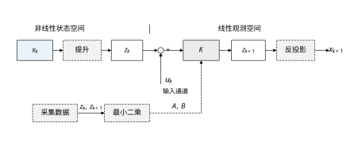
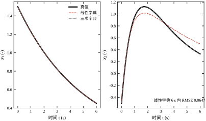
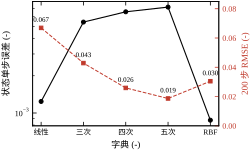
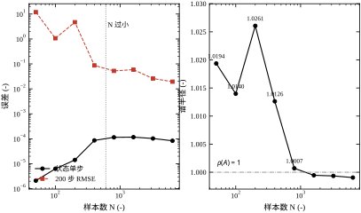
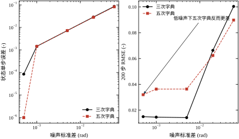
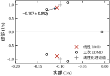
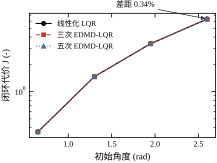
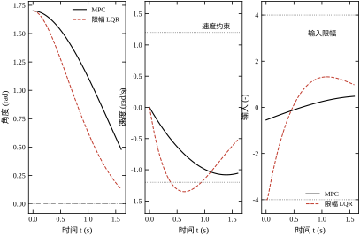
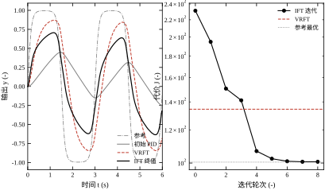
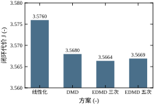

先看一台再普通不过的设备：单摆。把摆杆看作刚性、无弹性、转轴有黏性摩擦，取角度 x_1 与角速度 x_2 为状态，输入 u 为加在转轴上的力矩，它的运动方程是
\dot x_1=x_2,\qquad \dot x_2=-\sin x_1-0.2x_2+u \tag{77-1}
本章全部控制实验都用这个对象，采样周期 T_s=0.02 s，输入限幅 |u|\le 4。控制目标是把它从任意初始角度拉回竖直位置 x_1=0、x_2=0，代价函数取
J=\int_0^{t_f}\left(x_1^2+0.2x_2^2+0.1u^2\right)\mathrm{d}t \tag{77-2}
式 (77-1) 里只有一个非线性项 \sin x_1，其余都是线性的。工程师遇到这种对象的第一反应是线性化：在 x_1=0 处把 \sin x_1 换成 x_1，得到
\dot x_1=x_2,\qquad \dot x_2=-x_1-0.2x_2+u \tag{77-3}
它的极点是 -0.1\pm0.9950j，阻尼比约 0.1，无阻尼自然频率约 1 rad/s。按式 (77-3) 设计 LQR，得到状态反馈增益 \boldsymbol K=\begin{bmatrix}2.2385 & 2.3451\end{bmatrix}（见 §77.6）。这套做法在摆角小于 30^\circ 时工作得很好，几乎没有人会怀疑它。
问题出在“几乎”两个字上。摆角到 60^\circ 时，\sin x_1 比 x_1 小 17\%；到 90^\circ 时小 36\%；到 149^\circ（本章实测用的初值 x_1(0)=2.60 rad）时，\sin x_1=0.5155，不到 x_1 的两成。这时线性化模型给出的“恢复力矩”是真实值的 5 倍，控制器会误以为对象比实际更有力，于是给的动作偏小、收敛偏慢。传统上这类偏差靠“多留裕度”或“分段线性化”来兜，前者牺牲性能，后者在切换点附近引入新的不连续。
Koopman 提升的想法可以用一句话概括：不去改对象，去改我们观察对象的坐标。
具体地说，原来我们只观察两个量 x_1 与 x_2。现在允许观察任意函数：x_1^2、x_2^2、x_1x_2、x_1^3、\sin x_1……把这些函数排成一个向量
\boldsymbol z=\boldsymbol\varphi(\boldsymbol x)=\begin{bmatrix}\varphi_1(\boldsymbol x)\\ \varphi_2(\boldsymbol x)\\ \vdots\\ \varphi_n(\boldsymbol x)\end{bmatrix} \tag{77-4}
叫作提升向量，\boldsymbol\varphi 叫作字典。Koopman 算子的定义是：把任意一个观测函数 g 映射成“下一步的观测函数” g\circ f，即
(\mathcal{K}g)(\boldsymbol x)=g\big(f(\boldsymbol x)\big) \tag{77-5}
其中 \boldsymbol x_{k+1}=f(\boldsymbol x_k) 是对象的离散演化。\mathcal{K} 作用在函数空间上，是线性的——这一点不需要任何假设，因为“先演化再观察”与“先观察再演化”的复合本身对 g 就是线性的。真正的问题在于：\mathcal{K} 作用在无穷维函数空间上，而我们只能用有限个 \varphi_i 去近似它。
图 77-1 画出了这条链。左边是非线性的状态空间，经过字典映射进入中间那层“观测函数空间”，演化在那里由矩阵 \boldsymbol K 完成，最后经反投影回到状态。下方那条虚线支路是数据驱动辨识：拿采集到的 \boldsymbol z_k、\boldsymbol z_{k+1} 做最小二乘，直接拟合出 \boldsymbol A 与 \boldsymbol B，完全不需要知道 f 的解析式。

这条链的价值在于：一旦进入观测函数空间，所有线性系统成熟工具立刻可用——极点配置、LQR、观测器、频域分析、模型预测控制。代价是维数从 2 涨到 9、20 甚至上百，而且提升只是近似的，除非字典恰好张成了 \mathcal{K} 的一个不变子空间。
把上面的想法写成一句可计算的式子，就是
\boldsymbol z_{k+1}=\boldsymbol A\boldsymbol z_k+\boldsymbol B u_k,\qquad \boldsymbol z_k=\boldsymbol\varphi(\boldsymbol x_k) \tag{77-6}
式 (77-6) 与式 (77-1) 描述同一个对象，区别只在于前者是对后者的近似，而且近似误差没有解析上界。这一点决定了 Koopman 方法在工程上的全部难点：你不知道自己错在哪里，只能用数据反复验证。
本章用两个对象把这件事说透。
第一个是带慢流形的二状态自治系统，记作对象 A：
\dot x_1=\mu x_1,\qquad \dot x_2=\lambda\left(x_2-x_1^2\right),\qquad \mu=-0.20,\ \lambda=-1.00 \tag{77-7}
它有一个三维不变子空间 \mathrm{span}\{x_1,x_2,x_1^2\}，只要字典取到这三个函数，提升就是精确的，误差只受浮点精度限制。这个性质让本章可以先把“方法本身对不对”验证清楚。
第二个就是式 (77-1) 的单摆，记作对象 B。它的提升永远不是有限维的，只能用多项式或径向基函数去逼近——这才是工程上绝大多数对象的情形。本章用它比较线性化 LQR、DMD-LQR、EDMD-LQR 与 Koopman-MPC，并做字典、数据量、噪声、激励四组扫描。
第一，字典怎么选？ 选少了欠拟合，选多了过拟合，而且“多”这件事在提升空间里的表现与通常的回归问题不一样：字典越大，提升空间的单步残差反而可能上升，但状态空间的长时预测反而变好。§77.5 会用实测数据把这对反向趋势摆出来。
第二，数据要多少、怎么采？ 本章实测，样本数从 N=50 增到 N=6400，200 步预测误差从 11.8645 降到 0.0195，但中间不是单调的：N\le400 时误差在 O(1)，N\ge800 后掉到 O(0.01)。分水岭不是样本数本身，而是拟合矩阵的谱半径是否跨过 1（§77.5.4）。
第三，提升之后怎么设计控制器？ 在式 (77-6) 上直接解离散 LQR 是最省事的做法，但它默认了“提升坐标里的二次型代价”就是我们要的代价。本章会说明这个默认有多强，以及为什么在本章对象上它恰好没造成麻烦。
第四，什么时候不该用 Koopman？ §77.11 给出边界。一句话预告：当对象在工作点附近线性化已经够好时，Koopman 带来的收益往往在 1\% 量级（本章实测 0.34\% 到 0.27\%），真正值钱的是约束处理与激励设计，而不是提升本身。
本章的一句话是：非线性对象的困难不在于非线性本身，而在于我们能否找到一组坐标让演化在那组坐标下是线性的；Koopman 提升是找这组坐标的系统方法，字典与数据决定了能找多准，而控制器设计决定了找得准有没有用。
这句话的后半段常被忽略。很多教材把 Koopman 讲成“把非线性变成线性的魔法”，但本章的实测会反复显示：提升得再准，如果控制目标、约束、执行器能力没变，闭环性能的改善也是非常有限的。真正被改变的是可分析性——你能用线性工具去算谱、算能控性、算约束可行性，而不是靠试凑。
本章用了三个对象，各自回答一个问题，不能互换。
对象 A 只用来验证“方法本身”。 它没有输入，做不了控制实验；但它有一个三维不变子空间，字典取对了提升就是精确的。这让本章能先回答“EDMD 的代码与理解对不对”，再回答“这个方法在这个对象上有没有用”。工程上做任何辨识之前都该有这样一个“已知答案”的算例：连它都算不准，后面所有结论都是空的。
A 的第二个作用是把“字典缺项”的后果放大到肉眼可见。线性字典给出的连续特征值是 -0.2 与 -1.5174，后者与真值 -1.0 差 51.7\%，而它的轨迹要到 2 s 后才明显偏离。如果直接在单摆上做同样的比较，误差会被其他因素掩盖；在 A 上，只有“缺了 x_1^2”这一个原因可怪。
对象 B 承担全部控制实验。 单摆的非线性项光滑、单变量、物理意义明确，字典阶数与精度之间的关系容易解释。它的状态只有两维，五次字典也才 20 列，一组扫描几秒钟跑完。换成六自由度机械臂，同样的扫描要跑几个小时，而且很难判断误差来自字典截断还是来自未建模的关节柔性。
对教学与工程验证来说，能快速跑完的简单对象比真实但昂贵的对象更有用。前者的结论可以反复检查，后者的结论只能信一次。
B 还提供一个宽工作域。初值从 0.65 rad 扫到 2.60 rad，线性化给出的恢复力矩从与真值接近一路涨到真值的 5 倍，正好覆盖“线性化够用”到“线性化失效”的全过程。这个跨度是 §77.6 能得出“收益随初值增大而增大”这条结论的前提。
对象 C 用在 §77.9.4。 它的方程是 \dot y=-0.8y+0.4\tanh(2y)+u，参考信号取 \tanh\big(3\sin(2\pi t/3)\big)，周期 3 s。\tanh 让静态增益随幅值下降，线性 PID 在大幅跟踪时必然滞后，于是“整定能带来多少改善”有一个明确的量。
这个对象只用来考察“控制器结构固定、只调参数”的场景。VRFT 与 IFT 只需要输入输出数据，不需要提升、不需要 \boldsymbol A 与 \boldsymbol B，所以用一个标量对象最清楚。用单摆反而会把“整定”与“建模”两件事混在一起，说不清改善来自哪一步。
三个对象对应本章的三条主线：精确性（A）、闭环性能（B）、免模型整定（C）。读的时候要记住每个数字来自哪个对象。
A 的 2.174\times10^{-16} 不能当成 B 也能达到的精度；B 的 0.27\% 也不能推广到硬非线性对象。把不同对象上的数字混着引用，是读这类文献时最常见的误读。
这一章篇幅不短，不同读者可以走不同的路径。
现场工程师建议先读 §77.1、§77.3、§77.10 三节。它们回答“要不要用、怎么做、怎么上线”，几乎不含推导。§77.3.8 的选型演练可以当成模板，照着走一遍大约需要四五批数据。
做研究或写论文的读者重点在 §77.2、§77.4、§77.5。这三节讲清了提升的数学含义、连续与离散的取舍、以及三个校验指标为什么必须同时看。§77.5.3 与 §77.6.4 的两个反直觉结论，是本章最值得带走的东西。
教学使用可以按顺序讲，但建议把 §77.9.3 的 MPC 实测提前到 §77.6 之前。学生看到“提升没有带来性能收益”容易失去兴趣，先看到“用 17% 的代价换 0 步越界”，再回头看为什么无约束时没收益，逻辑会更顺。
关于数字。 本章所有数字都来自 code/ch077_sim.py 的一次运行，没有估算值。单位在首次出现时标注，之后省略；有效位数按测量精度给，一般不刻意凑整。
关于图。 十张图里只有图 77-1 是框图，其余都是数据图。数据图的纵轴几乎都用了对数刻度或截断，原因在对应图注里说明——尤其是图 77-10，纵轴截断是为了看清 0.27\% 的差异方向，而不是夸大它。
关于公式。 本章共有 33 个编号公式，其中真正需要推导的只有式 (77-13) 与式 (77-24)。其余或是定义，或是标准结果，读者可以跳过推导直接用。
与其他章节的关系。 线性系统的基础在第 30 章，LQR 在第 30 章与第 44 章，MPC 在第 58 章与第 80 章，PID 整定在第 44 章与第 106 章。本章不重复这些内容，只在需要时指回去。
设离散演化 \boldsymbol x_{k+1}=f(\boldsymbol x_k)，观测函数 g 属于某个函数空间 \mathcal{F}。Koopman 算子 \mathcal{K}:\mathcal{F}\to\mathcal{F} 由式 (77-5) 定义。它的线性性是显然的：
\mathcal{K}(a g_1+b g_2)(\boldsymbol x)=a g_1(f(\boldsymbol x))+b g_2(f(\boldsymbol x)) =a(\mathcal{K}g_1)(\boldsymbol x)+b(\mathcal{K}g_2)(\boldsymbol x) \tag{77-8}
如果存在非零 g 与常数 \lambda 使 \mathcal{K}g=\lambda g，则称 g 是 \mathcal{K} 的特征函数、\lambda 是对应的特征值。特征函数有一个非常有用的性质：沿着轨迹它按几何级数演化，
g(\boldsymbol x_k)=\mathcal{K}^k g(\boldsymbol x_0)=\lambda^k g(\boldsymbol x_0) \tag{77-9}
也就是说，只要知道 \lambda 与初值 g(\boldsymbol x_0)，就能预测 g 在任意时刻的值，不需要仿真。这正是“线性化”在函数空间里的含义。
对连续时间系统 \dot{\boldsymbol x}=\boldsymbol f(\boldsymbol x)，对应的算子是无穷小生成元
(\mathcal{L}g)(\boldsymbol x)=\nabla g(\boldsymbol x)\cdot\boldsymbol f(\boldsymbol x) \tag{77-10}
它与 \mathcal{K} 的关系是 \mathcal{K}=\mathrm{e}^{\mathcal{L}t}，因此 \mathcal{L} 的特征值 \nu 与离散 \mathcal{K} 的特征值 \lambda 满足 \lambda=\mathrm{e}^{\nu T_s}。本章后面报的“连续特征值”都是 \nu=\ln(\lambda)/T_s，这样可以直接与线性化极点比较。
用式 (77-7) 验证上面的定义。取 g_1=x_1、g_2=x_2、g_3=x_1^2，先算 g_3 的生成元：
\mathcal{L}(x_1^2)=2x_1\dot x_1=2\mu x_1^2=2\mu\,g_3 \tag{77-11}
再算 g_2：
\mathcal{L}(x_2)=\dot x_2=\lambda\left(x_2-x_1^2\right)=\lambda g_2-\lambda g_3 \tag{77-12}
g_1 更直接：\mathcal{L}(x_1)=\mu x_1=\mu g_1。把三式写成矩阵形式，
\frac{\mathrm{d}}{\mathrm{d}t}\begin{bmatrix}g_1\\g_2\\g_3\end{bmatrix} =\begin{bmatrix}\mu & 0 & 0\\ 0 & \lambda & -\lambda\\ 0 & 0 & 2\mu\end{bmatrix} \begin{bmatrix}g_1\\g_2\\g_3\end{bmatrix} \tag{77-13}
矩阵是上三角的，而且第三列只影响第二行——这意味着 \mathrm{span}\{g_1,g_2,g_3\} 在 \mathcal{L} 下封闭，是一个三维不变子空间。三个特征值是 \mu=-0.20、\lambda=-1.00、2\mu=-0.40。
代入 T_s=0.02 s，离散特征值应为
\mathrm{e}^{-0.004}=0.99600799,\qquad \mathrm{e}^{-0.02}=0.98019867,\qquad \mathrm{e}^{-0.008}=0.99203191 \tag{77-14}
本章脚本 E1 用最小二乘拟合这三个函数，得到的矩阵 \boldsymbol A 对角元是 0.99600799、0.98019867、0.99203191，与式 (77-14) 逐位一致；单步残差 2.174\times10^{-16}，300 步开环预测的 RMSE 是 1.2224\times10^{-14}。这两个数字都在双精度浮点的舍入量级，说明提升在数值上是精确的，而不是“近似得很好”。
反过来，如果字典只取 \{x_1,x_2\}（线性字典），拟合出来的连续特征值是 -0.2 与 -1.5174。前者对，后者错——真值是 -1.0，误差 51.7\%。更要紧的是，这个错的特征值看起来完全正常：它是负实数，衰减得比真值还快，从谱上根本看不出问题。这就是 §77.1.3 说的那道缝：近似误差不会自己报警。
真实对象的 \mathcal{K} 是无穷维的，我们只能取有限个观测函数 \varphi_1,\dots,\varphi_n 构成字典，并假设
\boldsymbol\varphi(f(\boldsymbol x))\approx\boldsymbol A\,\boldsymbol\varphi(\boldsymbol x)+\boldsymbol B u \tag{77-15}
式 (77-15) 里的 \boldsymbol A 就是 \mathcal{K} 在 \mathrm{span}\{\varphi_i\} 上的伽辽金投影：把 \mathcal{K}\varphi_j 投影回这个子空间，投影系数就是 \boldsymbol A 的第 j 列。当子空间不变时等号成立（对象 A 的三项字典），否则只是最小二乘意义下的最优。
把 M 组相邻样本排成矩阵，
\boldsymbol Z_1=\begin{bmatrix}\boldsymbol\varphi(\boldsymbol x_1)^\top\\ \vdots\\ \boldsymbol\varphi(\boldsymbol x_M)^\top\end{bmatrix},\qquad \boldsymbol Z_2=\begin{bmatrix}\boldsymbol\varphi(\boldsymbol x_2)^\top\\ \vdots\\ \boldsymbol\varphi(\boldsymbol x_{M+1})^\top\end{bmatrix},\qquad \boldsymbol W=\begin{bmatrix}\boldsymbol Z_1 & \boldsymbol u\end{bmatrix} \tag{77-16}
带输入的 EDMD（文献里常记作 EDMDc）就是解
\boldsymbol\Theta^\star=\arg\min_{\boldsymbol\Theta}\left\|\boldsymbol Z_2-\boldsymbol W\boldsymbol\Theta\right\|_F^2 \tag{77-17}
它的闭式解是 \boldsymbol\Theta^\star=(\boldsymbol W^\top\boldsymbol W)^{-1}\boldsymbol W^\top\boldsymbol Z_2，或直接用 QR 分解求解以避免显式求逆。解出来之后按行切开：前 n 行转置得 \boldsymbol A^\top，最后一行转置得 \boldsymbol B^\top。本章脚本里就是三行：
A = Th[:-1].T
B = Th[-1:].T式 (77-17) 有一个容易被忽视的细节：它把字典的所有分量同等对待。如果 \varphi_1=x_1 的量级是 1，而 \varphi_9=x_1^5 的量级是 0.1，最小二乘会倾向于把误差摊在量级大的分量上，结果就是低阶项拟合得好、高阶项拟合得差。这不是算法缺陷，而是“没有加权”的必然后果。工程上的对策有两个：一是把字典按样本标准差归一化后再拟合，二是改用状态空间误差作为评价指标（§77.5.2）。
式 (77-6) 是离散形式，式 (77-10) 是连续形式，两者只差一个矩阵指数。工程上选哪个，取决于数据是怎么来的。
离散形式适合“采样数据直接拟合”：传感器每 T_s 给一组数，相邻两组就是一个样本对，不需要知道采样之间的演化。本章的全部实验都用这种形式，因为现场数据就是这样。
连续形式适合“有解析模型、想算谱”：如果 \boldsymbol f 已知，可以直接在字典上算 \mathcal{L} 的矩阵表示，特征值就是连续时间的衰减率与频率，物理意义更直观。对象 A 的式 (77-13) 就是连续形式。
两者的换算在数值上要小心。\lambda=\mathrm{e}^{\nu T_s} 在 |\lambda| 接近 1 时对舍入误差极其敏感：T_s=0.02、\nu=-0.01 时，\lambda=0.9998，此时 \lambda 的 10^{-6} 误差会让 \nu 产生 5\times10^{-5} 的误差。本章脚本里两次出现“对数特征值”，都用了双精度，并且只报四位有效数字，就是为了避开这个陷阱。
字典大小决定了提升维数 n。二状态对象取到 d 阶完全多项式时，
n=\frac{(d+1)(d+2)}{2} \tag{77-18}
d=1 给 n=3，d=2 给 n=6，d=3 给 n=10。本章脚本去掉了常数项（它对演化没有信息，且会让 \boldsymbol A 多一个等于 1 的平凡特征值），所以实际列数是 n-1：线性字典 2 列、三次 9 列、四次 14 列、五次 20 列。径向基字典取 5\times5=25 个中心，加上两个线性项共 27 列。
n 增长得很快。d=8 时 n=44，d=12 时 n=90；如果再加入三角函数、指数函数等“物理字典”，n 上百是常事。这就是 Koopman 方法最现实的成本：它的线性是用维数换来的。§77.7 会给出维数、数据量、计算量三者的定量关系。
式 (77-15) 说了“近似”，但没说在什么意义下近似。这个“意义”决定了你算出来的 \boldsymbol A 到底是什么。
第一种意义是连续伽辽金。 要求残差 \mathcal{K}\varphi_j-\sum_i A_{ij}\varphi_i 与子空间里的每个基函数都正交，内积按状态空间上的某个测度取。如果子空间不变，残差恒为零，投影是精确的——对象 A 的三项字典就是这种情形。
第二种意义是离散最小二乘。 只在采集到的样本点上让误差平方和最小，也就是式 (77-17)。它不提“正交”，只提“这 M 个点上误差小”。
两者的关系是：离散最小二乘就是拿经验测度代替真实测度的伽辽金投影。样本在哪儿多，测度就在哪儿重，模型就在哪儿准。这句话解释了本章后面几个看似无关的现象。
第一，它解释了为什么训练数据必须覆盖工作域（§77.3.4）。数据没去过的地方，测度为零，残差在那儿取什么值都不影响最小二乘，模型的行为完全由外推决定。
第二，它解释了为什么闭环初值超出训练域时仍能收敛（表 77-5）。单摆的非线性是良性的，外推虽然不准，但方向没错；换个带继电器或死区的对象，同样的外推会直接把闭环推散。
第三，它解释了为什么“加数据”与“加覆盖”是两件事（§77.5.4）。在同一小片工况里加样本只是把测度变得更集中，谱半径会改善，但工作域边缘的精度不会动。
残差不为零有三个来源，对策完全不同，混在一起就会得出错误的调参结论。
结构误差来自子空间不变性缺失。字典里没有 x_1^2，无论多少数据都补不回来。对策是加阶或换字典族。
统计误差来自样本有限。N 增大时它会下降，但下降速度取决于激励的丰富程度。
数值误差来自病态。高阶列量级悬殊、矩阵条件数大，最小二乘的解对舍入敏感。对策是归一化与岭。
有一个便宜的判别方法：固定字典，把 N 从 400 加到 6400，看单步误差怎么走。若单调下降到某个平台，说明统计误差已饱和、剩下的是结构误差；若抖动甚至上升，说明数值误差在起作用。
本章表 77-3 就是这个方法的实例：字典固定为三次，单步误差从 N=50 的 2.1039\times10^{-6} 升到 N=1600 的 1.1648\times10^{-4}，之后才回落到 8.3298\times10^{-5}。
单步误差随 N 上升，初看违反直觉，其实是从训练误差变成了泛化误差。N=50 时 9 个参数拟合 50 个点，模型几乎在插值，训练集上的单步误差自然小得离谱；N 大了，每个点都摊不到一个自由参数，误差才反映真实水平。
所以跨 N 比较单步误差没有意义，只能在同一个 N 下比较不同字典。这一点与普通回归的“训练误差—验证误差”之分完全一致，只是 Koopman 把训练集与验证集的差别藏在了字典里。
字典是方法的全部“先验”，选它等于决定模型能表达什么。按信息来源分，可用的基函数有三类。
第一类是状态的低阶多项式。 x_1,x_2,x_1^2,x_1x_2,x_2^2,\dots。它们不需要任何对象知识，适合做默认选择。缺点是维数涨得快，且外推时迅速爆炸。
第二类是物理已知项。 单摆的 \sin x_1、干摩擦的 \mathrm{sgn}(x_2)、饱和的 \tanh(kx_2)。这类项一旦猜对，维数可以压到很低，精度还高。
第三类是局部基。 RBF、样条、分段多项式。它们不依赖对象知识，靠局部逼近换取灵活性，适合“非线性形状复杂但没有明确表达式”的场合。
选择顺序应当是：先用第二类，没有就先上第一类，两者都不够再考虑第三类。这个顺序的理由是“先验越强，需要的数越少”。
有一个常见的错误是把三类混在一起，觉得“多放一些总没坏处”。实际后果是列之间高度相关，条件数暴涨，谱半径越过 1。§77.7.8 的耦合分析已经说明，加列必须加数据。
关于常数项。 本章脚本去掉了常数项 1。原因是它在演化下不变，会让 \boldsymbol A 多一个等于 1 的特征值，谱半径的下界被钉在 1 上，之后所有关于稳定性的判断都失效。
如果对象有明显的偏置（比如重力导致的静态力矩），正确做法是把偏置并进输入通道，而不是放一个常数基函数。
关于量纲。 角度以 rad 计、角速度以 rad/s 计，两者的数值量级可能差一个数量级。混合项 x_1x_2 与 x_1^2 的量级也随之不同，最小二乘会偏向量级大的列。
处理办法有两个：一是拟合前按列标准差归一化（§77.3.5），二是选字典时就避免量级悬殊的组合。前者是通用手段，后者要求对工况有感觉。
关于“要不要加 \sin x_1”。 对单摆这类对象，加 \sin x_1 几乎一定有效，因为它就是非线性本身。但工程上更常见的情形是“知道有非线性、不知道是什么形状”，这时加一个 \sin 只是在赌。
一个稳妥的做法是同时准备两套字典：多项式版与物理版，用同一批数据各拟合一次，比三个校验指标。如果物理版明显更好，说明猜对了；如果差不多，就用多项式版，因为它不依赖猜测。
这条建议看起来保守，但它避免了一个隐蔽的风险：物理项猜错时，模型不会报警，只会在某个工况下突然失效。多项式版至少误差是连续变化的，容易发现。
Koopman 控制看起来是一堆矩阵运算，落到工程上仍然是一条有先后的流程。顺序错了，后面每一步都会建在错的基础上。表 77-1 是本章推荐的七步，后面六小节逐步展开。
| 步骤 | 做什么 | 交付物 | 常见错误 |
|---|---|---|---|
| 1 | 确定观测变量、工况范围、约束 | 变量清单与量程 | 只取状态，忘了执行器动态 |
| 2 | 选字典族与阶数 | 候选字典 2–3 套 | 一上来就用五次多项式 |
| 3 | 设计激励、采集数据 | 训练集与验证集 | 用闭环运行数据当训练集 |
| 4 | 拟合 \boldsymbol A,\boldsymbol B 并正则化 | 提升模型 | 不做归一化、不做岭 |
| 5 | 三重校验：单步、谱半径、长时 | 校验报告 | 只看单步误差 |
| 6 | 在提升空间设计控制器 | 增益或 MPC | 直接把 \boldsymbol Q 套在提升坐标上 |
| 7 | 闭环验证与退化预案 | 上线判据 | 不准备回退到线性化方案 |
这张表里最容易被跳过的是第 5 步。多数教程给完最小二乘公式就结束了，而工程上真正决定成败的正是“你怎么知道自己拟合对了”。本章把第 5 步拆成三个互补的指标，原因在 §77.5.2 会看到：单步误差与长时误差可以反向变化，只报一个必然误导。
第一步不是选字典，而是把“能测什么”列清楚。这里有三个常犯的错。
第一个错是只写状态。 式 (77-1) 的状态是角度与角速度，看起来两个量就够。但现场往往测不到角速度，只能对角度做差分；差分引入的噪声在提升空间里会被高阶项放大。如果角速度是观测出来的，字典里就应该包含滤波后的角速度，而不是原始差分。
第二个错是忘了执行器动态。 力矩源如果是电机，电流环有几十毫秒的滞后；如果是气动，阀门的死区与滞环更明显。这些动态不写进字典，辨识出来的 \boldsymbol B 会把滞后摊进增益里，闭环在高频段就会出现相位不足。工程上的做法是把执行器输出也作为一个观测变量，让字典自己去学它与状态的耦合。
第三个错是量程没定。 提升是非线性的，超出训练数据覆盖范围之后，多项式字典会以 x^5 的速度外推，结果毫无意义。所以第一步必须写下“训练覆盖 x_1\in[-1.35,1.74]、x_2\in[-1.18,1.27]”这样的边界（本章脚本按初值 \pm2.2 抽样，实际轨迹落在这个范围内），并在第 7 步把它变成软约束或报警。
字典的选择有三条判据，按优先级排列。
判据一：能覆盖非线性机制。 如果知道非线性来自 \sin x_1，字典里放 \sin x_1 与 \cos x_1 比放 x_1^5 有效得多；如果来自干摩擦，放 \mathrm{sgn}(x_2) 或 \tanh(kx_2) 更合适。这类“物理字典”能把维数压到很低，但要求对对象有先验认识。
判据二：在数据覆盖范围内数值稳定。 五次多项式在 x_1=2.2 处的值是 51.5，而线性项只有 2.2，两者相差 23 倍。如果数据只覆盖到 1.0，x_1^5 的最大值只有 1，量级接近，拟合是良态的；一旦外推到 2.2，高阶项立刻主导。这就是为什么同一套字典在不同工况下表现可以差很多。
判据三：列数不要超过样本数的十分之一。 这是经验值。N=400 个样本配 20 列的字典，比例是 20:1，勉强够；配 27 列的 RBF，比例降到 15:1，噪声一大就开始过拟合（§77.8 有实测）。样本少的时候，宁可降阶也不要加岭——降阶损失的是模型结构，加岭损失的是无偏性，前者还可以靠物理直觉补，后者只能靠更多数据补。
这是本章最容易被低估的一步。很多现场的做法是“让设备正常跑一段，把数据拿来拟合”，看起来省事，实际上采集到的数据只在一条窄窄的工况带里，提升模型在这个带外完全没有约束。
正确的做法是主动设计激励。可选的信号有四类：
本章 E9 实测了这四种信号（§77.10.2）：多正弦的条件数最小（12.14），阶跃最大（138.53），而闭环抖动的条件数高达 120.36 却给出了可用的模型。这组数据说明条件数不是判据——后面会详细解释。
拟合本身是一次最小二乘（式 77-17），工程上要加三件事。
归一化。 把每一列 \varphi_i 除以它在训练集上的标准差，拟合完再把系数除回去。这一步能把条件数降一到两个数量级，几乎不要成本。
岭项。 在正规方程里加 \gamma\boldsymbol I：
\boldsymbol\Theta^\star=\left(\boldsymbol W^\top\boldsymbol W+\gamma\boldsymbol I\right)^{-1}\boldsymbol W^\top\boldsymbol Z_2 \tag{77-19}
\gamma 的作用是把解往零拉，等价于给高阶项加惩罚。\gamma 的量级要相对于 \boldsymbol W^\top\boldsymbol W 的迹来定，通常取 \gamma=10^{-6}\sim10^{-3}\|\boldsymbol W\|_F^2/n。本章无噪声实验取 \gamma=0，噪声实验也保持 0，目的是把“过拟合”这个现象暴露出来而不是掩盖它。
分段处理。 数据来自多段独立实验时，不要把段尾与段首接起来当成相邻样本。本章脚本按段堆叠（np.vstack），段内取相邻对，段间不取，这样避免了“从段尾跳到段首”的假样本。
这一小节是本章方法论的骨架，后面所有实验的结论都建立在它上面。
校验一：状态空间单步误差。 注意不是提升空间的残差。定义
e_{\text{1步}}=\sqrt{\frac{1}{M}\sum_{k=1}^{M}\left\|\hat{\boldsymbol x}_{k+1}-\boldsymbol x_{k+1}\right\|^2},\qquad \hat{\boldsymbol x}_{k+1}=\left[\boldsymbol A\boldsymbol\varphi(\boldsymbol x_k)+\boldsymbol B u_k\right]_{1:2} \tag{77-20}
只取提升向量的前两维（也就是 x_1,x_2）反投影回来比。为什么必须这样？因为提升空间的残差随字典增大而上升——字典越大，高阶分量越多，拟合时摊到每个分量上的相对误差越大，但状态本身可能预测得更准。本章实测：线性字典的提升残差 1.24\times10^{-3}，五次字典是 7.18\times10^{-3}，后者反而大 5.8 倍；而状态单步误差从 1.0844\times10^{-3} 降到 6.2731\times10^{-7}，后者好 1728 倍。两个指标给出完全相反的排序，只有状态空间的那个才是工程师关心的。
校验二：谱半径。 计算 \rho(\boldsymbol A)=\max_i|\lambda_i(\boldsymbol A)|。离散系统要求 \rho<1，否则开环预测必然发散。这个指标极其便宜（一次特征值分解），却极其有效：本章 E3 里，N\le400 时谱半径在 1.0126\sim1.0261 之间，200 步预测误差是 0.0871\sim11.8645；N\ge800 后谱半径降到 1.0007 以下，误差掉到 0.0195\sim0.0589。分水岭就是 \rho=1 这条线。
校验三：长时开环 rollout。 用验证集（与训练集不同的初值与激励）跑 200 步纯开环预测，算
e_{200}=\sqrt{\frac{1}{200}\sum_{k=1}^{200}\left\|\hat{\boldsymbol x}_{k}-\boldsymbol x_{k}\right\|^2} \tag{77-21}
这个指标把单步误差与谱半径的效应合在一起：单步误差小但谱半径略大于 1，200 步后误差会被指数放大；谱半径小于 1 但单步误差大，误差会稳定在一个偏高的平台上。工程上真正该看的是它。
三个指标的读法可以总结成一句话：单步看拟合，谱半径看稳定，长时看可用。
有了可信的提升模型，第六步是在它上面设计控制器。最直接的是离散 LQR：
\boldsymbol K=\left(\boldsymbol R+\boldsymbol B^\top\boldsymbol P\boldsymbol B\right)^{-1}\boldsymbol B^\top\boldsymbol P\boldsymbol A,\qquad \boldsymbol P=\boldsymbol A^\top\boldsymbol P\boldsymbol A-\boldsymbol A^\top\boldsymbol P\boldsymbol B\left(\boldsymbol R+\boldsymbol B^\top\boldsymbol P\boldsymbol B\right)^{-1}\boldsymbol B^\top\boldsymbol P\boldsymbol A+\boldsymbol Q \tag{77-22}
式 (77-22) 是标准 Riccati 方程，与第 30 章的连续形式只差离散化，不再重复推导。需要强调的是 \boldsymbol Q 的取法：提升坐标里除 x_1,x_2 之外的分量没有直接物理意义，给它们加权等于隐式地惩罚“非线性程度”。本章的做法是给前两维正常权重（1 与 0.2），其余维给很小的权重（10^{-3} 或 10^{-4}），让它们只起“补足动力学”的作用，不参与性能评价。
第七步是闭环验证。这里要准备一个退化预案：如果闭环性能不如线性化方案，或者在某些初值下失稳，要能立刻切回线性化 LQR。本章实测的结论是，在这个单摆对象上，Koopman 方案与线性化方案的闭环代价只差 0.27\%（§77.11），所以退化预案不是可选项而是必备项——收益这么小的时候，任何一点异常都足以抵消它。
抽象的流程只有落到一个具体场景里才知道怎么用。这一小节把表 77-1 完整走一遍，数字全部取自本章实验。
设定如下：单摆台架，角度编码器分辨率 0.001 rad，力矩电机限幅 \pm4，工艺要求是从任意初值在 7 s 内回到竖直位置，且角速度不超过 1.2 rad/s。
第一步，列变量与量程。 状态取角度与角速度，输入取力矩。量程由静态检查确定：角度 \pm3.0 rad、角速度 \pm2.5 rad/s、力矩 \pm4。训练域要留余量，取角度 \pm1.7 rad，而不是贴着机械限位。
第二步，先试线性字典。 拟合出来的单步误差 1.0844\times10^{-3}，200 步 RMSE 0.0669。这两个数只能作为基准，不能单独判断好坏——它们说明“线性字典能做到这个程度”，但没说该不该加阶。
判断依据要拿线性化误差来比。工作域边缘 1.7 rad 处 \sin x_1=0.9917，线性化给出 1.7，高估 71\%。既然结构误差这么大，就值得加阶，于是试三次字典。
三次字典的单步误差 4.3217\times10^{-5}，比线性好 25 倍，200 步 RMSE 0.0429。改善明确，先停在这里，不急着上五次——四次、五次留到“三次不够”时再试。
第三步，设计激励。 选多正弦，四个频率、每路幅值 0.30，采 6 段、每段 400 步，共 2400 个样本。三次字典 n=9，40n=360，样本量有六倍余量。
不用阶跃的理由很实在：表 77-9 里阶跃数据的闭环代价是 524.5593，是正常值的 147 倍。现场没有第二次机会去发现这个错误，所以第一次就该选对激励。
第四步，拟合。 先不加岭，把无正则化的结果留作基线；同时保留 \gamma 作为后续手段——如果谱半径过线，第一反应是加样本，第二反应才是加岭。
第五步，三重校验。 单步误差比线性字典好 25 倍，满足“至少一个数量级”；200 步 RMSE 0.0429 低于工作域 1.7 rad 的 5\%（即 0.085），通过；谱半径按 §77.5.4 的门槛应小于 1，若不满足就按表 77-7 的第 3 轮加样本。
第六步，设计控制器。 取 \boldsymbol Q=\mathrm{diag}(1,0.2,10^{-3},\dots)、R=0.1，与式 (77-2) 的代价对应。解出的增益前两维是 2.1756 与 2.3846，与线性化的 2.2385、2.3451 同量级；第三维只有 -4.0\times10^{-4}，几乎为零（§77.6.6 会专门讨论这一点）。
第七步，闭环验证与决策。 初值从 0.65 扫到 2.60，闭环代价 0.3599 到 6.3181；同条件下线性化是 0.3597 到 6.3399，最坏情形只好 0.34\%。
按 §77.8.3 的判定标准（改善不足 1\% 就不值得增加复杂度），这次选型的结论是不采用 Koopman-LQR。但工艺还有一条“速度不超过 1.2 rad/s”，线性化 LQR 会越界 27 步，这条它满足不了。
于是回到表 77-8：Koopman-MPC 用 17.1\% 的代价换来 0 步越界。到这一步，采用 Koopman 的理由已经不是“更准”，而是“能把速度约束写成线性不等式”。选型结论从“提升更准”换成了“提升更好约束”，这才是这条路的真实卖点。
这个演练的意义在于：七步走完得到的结论可能是“不用”，这不是失败，而是选型的正常结果。本章大部分篇幅在讲怎么把模型做准，但工程决策的依据始终是“任务需要什么”，而不是“方法有多先进”。
“多正弦”三个字说起来简单，频率选错等于没激励。这一小节给出一套可执行的选频方法。
最低频率由数据总时长决定。 式 (77-27) 说 f_{\min}=1/T_{\text{total}}。要比这个值高两到三倍，才有足够多的周期去辨识。
本章 T_{\text{total}}=48 s，f_{\min}=0.021 Hz，取最低频率 0.18 Hz，是下限的八倍多，余量充足。如果把总时长缩到 8 s，f_{\min}=0.125 Hz，0.18 Hz 就只剩一点四倍，辨识会变得不稳。
最高频率由闭环带宽与采样决定。 经验上取闭环带宽的五到十倍，同时不超过 1/(10T_s)。本章 T_s=0.02 s，上限是 5 Hz；实际取的最高频率 1.21 Hz，远低于上限。
为什么不取到上限？因为再高的频率对状态预测没有帮助，反而会激励伪模态，让谱半径变大。
频率不要成整数比。 四个频率若取 1:2:3:4，叠加信号会周期重复，某些相位组合下幅值叠加成尖峰。本章取的是非整数比，叠加后的输入峰值 1.11，比单路幅值 0.30 的四倍小得多。
幅值要逐级加。 从 0.1 到 0.2 再到 0.3，每一档跑 30 s，观察有没有异响、超限、饱和。本章最终取 0.30，轨迹覆盖 x_1\in[-1.35,1.74]，正好在工作域内。
幅值再大，轨迹会跑到 2 rad 以上，高阶项主导，拟合出来的模型在常用工况反而不准。幅值再小，\boldsymbol B 的信噪比不够（§77.6.1 前提三）。
怎么检查选得对不对？ 采完数据后看一眼输入与状态的频谱：输入应在四个频率上有明显峰，状态应在这些频率及其谐波上有响应。
如果状态频谱在某个频率上没有响应，说明该频率没有激励到对象，可以去掉；如果输入频谱出现很多高频毛刺，说明执行器有非线性（比如死区），需要在预处理时注意。
最后一条：频率要与控制目标对齐。 如果关心的是“多快能回到零”，激励就要覆盖闭环带宽附近；如果关心的是“稳态精度”，低频段的激励更重要。频率选得再“宽”，与目标无关的频段也只是浪费行程。
离散特征值 \lambda 是个复数，|\lambda|<1 表示衰减，辐角表示每步转多少度。这两个量都不直观。连续特征值 \nu=\ln(\lambda)/T_s 的实部直接是衰减率（单位 1/s），虚部直接是角频率（单位 rad/s），能和“时间常数 1/|\mathrm{Re}\,\nu| 秒”“周期 2\pi/|\mathrm{Im}\,\nu| 秒”对应起来。
所以本章的诊断都换算到连续域再讲。换算的前提是 T_s 足够小，使得 \nu T_s 落在主值区间 (-\pi,\pi) 内；本章 T_s=0.02 s，最高关注的频率约 1.2 Hz（角频率 7.5 rad/s），\nu T_s\approx0.15，离 \pi 很远，不存在混叠。
§77.2.2 已经算出对象 A 的生成元矩阵（式 77-13）。把它写成离散形式只需要一次矩阵指数：
\boldsymbol A=\exp\left(\boldsymbol L T_s\right),\qquad \boldsymbol L=\begin{bmatrix}\mu & 0 & 0\\ 0 & \lambda & -\lambda\\ 0 & 0 & 2\mu\end{bmatrix} \tag{77-23}
因为 \boldsymbol L 是上三角的，\exp(\boldsymbol L T_s) 也是上三角的，对角元分别是 \mathrm{e}^{\mu T_s}、\mathrm{e}^{\lambda T_s}、\mathrm{e}^{2\mu T_s}。这就是式 (77-14) 那三个数。非对角元 (2,3) 是
\left[\exp(\boldsymbol L T_s)\right]_{23}=-\lambda\,\frac{\mathrm{e}^{\lambda T_s}-\mathrm{e}^{2\mu T_s}}{\lambda-2\mu} \tag{77-24}
代入 \lambda=-1、\mu=-0.2、T_s=0.02 得 0.01972207，与脚本拟合出来的 (2,3) 元 0.01972207 完全一致。这个非对角元很关键：它表示“x_1^2 会往 x_2 里注入多少”，是慢流形耦合的直接度量。如果字典里没有 x_1^2，这一项只能被强行压进 (2,1) 元，而 (2,1) 元在真实系统里是严格为零的——拟合出来的线性模型于是把“平方项的影响”误认成“线性耦合”，谱就被扭曲成 -1.5174。
图 77-2 是同一段 300 步（6 s）自治数据的预测对比。真值用粗黑线，线性字典用红虚线，三项字典用灰点划线。

三项字典那条线在图上根本看不出来，因为它与真值重合到 10^{-14}。线性字典的偏差从 1 s 左右开始显现，到 6 s 时累积到 6.4681\times10^{-2} 的 RMSE。注意这个偏差不是随机漂移：它是有方向的，x_1 偏大、x_2 偏小，因为线性模型把“x_1^2 向 x_2 注入”这一项漏掉了，导致 x_2 衰减得比真实快，反过来又让 x_1 衰减得比真实慢。
这就是“谱错了会怎样”的直观版本：错的特征值 -1.5174 比真值 -1.0 衰减更快，于是 x_2 被过度衰减；漏掉的耦合项本应把 x_1^2 的能量送进 x_2，现在这部分能量留在 x_1 里，x_1 就衰减不足。谱的误差与轨迹的误差是一一对应的，只是前者藏在复数里，后者画在图上才看得见。
把拟合矩阵的特征值取对数除以 T_s，得到三个连续特征值：-0.2、-0.4、-1.0。它们对应三种时间尺度：
第三个特征是理解慢流形的钥匙。x_1^2 衰减得比 x_1 快一倍，所以经过几个时间常数后，x_1^2 相对于 x_1 可以忽略，x_2 的动态退化成 \dot x_2=\lambda x_2，系统在 (x_1,x_2) 平面上沿 \mathrm{d}x_2/\mathrm{d}x_1=\lambda x_2/(\mu x_1) 这条曲线滑向原点。这条曲线就是慢流形，它的存在让“降阶建模”成为可能——很多工程对象的有效维数远低于名义维数，原因就在这里。
连续形式看起来更漂亮，但工程上必须回到离散，因为数据是离散采的。T_s 的选择有两个约束。
上界来自混叠与稳定性。 对象最快的极点实部是 -1.0，周期约 6.3 s，T_s=0.02 s 对应每周期 314 个点，非常充裕。如果把 T_s 加到 0.1 s，每周期 63 个点，仍然够用；加到 0.5 s 就只剩 12.6 个点，离散化的相位误差开始明显。经验规则是 T_s\le1/(10|\nu_{\max}|)，本章 |\nu_{\max}|\approx1，所以 T_s\le0.1 s。
下界来自噪声放大。 T_s 越小，相邻样本的差越小，测量噪声在差分里的相对比重越大。本章 E4 的噪声实验用 T_s=0.02 s，噪声标准差 0.06 rad 时，相邻两步的角度差通常只有 0.02\times1=0.02 rad，噪声已经是信号的三倍。这时提升拟合实际上是在拟合噪声，必须靠岭或降阶来压制。
两个约束一夹，T_s 的合理区间往往很窄。工程上的做法是先按上界定，再根据噪声水平往下调一档，然后用状态单步误差验证：如果单步误差随 T_s 减小而急剧上升，说明已经进入噪声主导区，应该退回去。
连续形式好看，但不是所有场合都值得绕这一圈。判断标准只有一条：算出来的 \nu 会不会被你真正用来做决定。
值得用的第一种场合，是对象有一部分解析知识。比如单摆的 \sin x_1 是确定的，只有阻尼系数未知；这时可以在已知结构上算生成元，只让数据去定那几个系数。这样得到的 \nu 有明确的物理归属，不是一堆拟合出来的数。
值得用的第二种场合，是要与线性化极点对照。§77.6.2 就是例子：DMD 给出 -0.1072\pm0.8919j，线性化给出 -0.1\pm0.9950j，实部差 7.2\%、虚部差 10.4\%。这两个数只有在连续域里才好比；换成离散特征值，实部与虚部的差别都落在小数点后第三、四位，肉眼很难分辨。
值得用的第三种场合，是要做频域设计或共振分析。\nu 的虚部直接是振荡频率，实部直接是阻尼，能与 Bode 图、与结构的固有频率对上。用离散 \lambda 也能换算，但每换一次就多引入一次对数误差。
反过来，三种场合不值得用。一是纯黑箱数据。 对数换算要求严格等间隔采样，现场采集常有丢帧与抖动，一处理就要插值，插值又引入相位误差。
二是矩阵非正规严重。 特征值对扰动本来就敏感，取对数会把这种敏感放大。这时离散 \boldsymbol A 的谱半径反而是更稳的判据，因为它只依赖特征值的模，不依赖幅角。
三是只做预测或控制。 直接拟合离散映射就够了，中间多一层连续化没有任何收益。本章的实验全部走这条路。
本章采用的是一种折中：拟合离散 \boldsymbol A，只在读谱时取对数，不回代仿真。这样既保留了物理解释，又避免了连续模型在回代时的数值放大。
还有一个细节必须提醒：对数有分支。\lambda=\mathrm{e}^{\nu T_s} 只在 \nu T_s\in(-\pi,\pi) 时唯一。如果 T_s 太大，某个高频模态的 \nu T_s 超过 \pi，\ln\lambda 会给出主值，把它误读成一个低频模态。
本章 T_s=0.02 s、最高关注频率约 1.2 Hz（角频率 7.5 rad/s），\nu T_s\approx0.15，离 \pi 很远，不存在这个问题。但凡把 T_s 放大到 0.5 s 以上，读谱前就必须先检查分支。
最后一条经验：报连续特征值时一定同时报 T_s。只写“极点在 -0.13”而没写采样周期，别人无法复算，也无法判断有没有混叠。这是文献里很常见的一处信息缺失。
连续特征值看起来是“算出来的”，其实它的有效位数远少于矩阵元素的位数。四个因素依次限制精度。
第一是采样。 \nu=\ln\lambda/T_s 里 T_s 是分母，T_s 的相对误差直接进入 \nu。现场采样常有时基抖动，1\% 的周期误差就有 1\% 的谱误差。
第二是噪声。 噪声让 \boldsymbol A 的估计有偏，特征值随之偏移。E4 里 \sigma=0.02 时五次字典的谱半径从 1.0045 掉到 0.9994，这个变化不是对象变了，而是估计变了。
第三是字典截断。 截断产生的伪模态会与真实模态“混”在一起。本章三次 EDMD 给出 9 个实极点，真正对应主要动态的只有 -0.1302 那一对，其余 7 个的数值随字典阶数漂移。
第四是数值。 对数在 |\lambda| 接近 1 时条件数极大，双精度也只能保证几位有效数字。所以本章报谱时一律只给四位，最后一位还可能变。
怎么区分真实模态与伪模态？ 有三个可操作的判据。
第一，加阶后是否稳定。把字典从三次加到五次，-0.1302 几乎不动，其余的值明显漂移——稳定的那个可信。
第二，是否与已知物理时间常数对上。单摆的线性化极点 -0.1\pm0.9950j 有明确来源，任何接近它的极点都值得注意。
第三，换一批数据是否复现。同一对象、不同激励段重复辨识，真实模态会稳定出现，伪模态会跳。
三个判据都通过，才可以给这个极点“编故事”。只通过一个，最好只把它当成拟合参数。
还有一条实践建议：报谱时同时报条件数。 条件数大的模型，谱的误差也大；只看谱的数值而不看它的可信度，容易被最后一位小数误导。
从连续到离散有两条路，选哪条取决于你手上有什么。
第一条：先辨识连续、再离散化。 先用数据拟合生成元矩阵 \boldsymbol L，再算 \boldsymbol A=\mathrm{e}^{\boldsymbol L T_s}、\boldsymbol B=\int_0^{T_s}\mathrm{e}^{\boldsymbol L\tau}\mathrm{d}\tau\,\boldsymbol B_c。这条路的优点是特征值有物理意义，缺点是矩阵指数对 \boldsymbol L 的误差敏感——\boldsymbol L 的特征值差 1\%，\mathrm{e}^{\boldsymbol L T_s} 可能差得更多，尤其在 \boldsymbol L 非正规时。
第二条：直接拟合离散映射。 把相邻样本对直接代入式 (77-17)，得到的就是 \boldsymbol A、\boldsymbol B，不需要经过连续域。本章全部实验走这条路，因为它是“数据驱动”的原意：不假设中间有一个连续模型。
两条路的结果在 T_s 足够小时应该一致，但数值性质差别很大。第一条路的 \boldsymbol A 一定是可逆的（矩阵指数永远可逆），第二条路的 \boldsymbol A 在数据不足时可能接近奇异。这个差别在 §77.5.4 会变成一个可用的诊断信号。
先看字典从小到大是什么表现。训练集用 6 段、每段 400 步的多正弦激励数据（共 2400 个样本），验证集另采一段 200 步，结果列在表 77-2。
| 字典 | 列数 n | 状态单步误差 | 200 步 RMSE |
|---|---|---|---|
| 线性 | 2 | 1.0844\times10^{-3} | 0.0669 |
| 三次 | 9 | 4.3217\times10^{-5} | 0.0429 |
| 四次 | 14 | 2.7734\times10^{-5} | 0.0259 |
| 五次 | 20 | 6.2731\times10^{-7} | 0.0187 |
| RBF（5\times5） | 27 | 6.0449\times10^{-7} | 0.0305 |
两条趋势值得注意。
趋势一：误差都在降，但降的幅度不一样。 从线性到三次，单步误差降了 25 倍，长时误差只降了 36%；从三次到五次，单步误差再降 69 倍，长时误差降 56%。长时误差的下降总是比单步误差慢，因为长时误差受谱半径支配，而谱半径的改善不随单步精度线性变化。
趋势二：RBF 不是万能的。 RBF 字典的单步误差（6.0449\times10^{-7}）与五次多项式（6.2731\times10^{-7}）几乎相同，但长时误差差了 63%（0.0305 对 0.0187）。原因是 RBF 的局部性：每个基函数只在一小块区域里有效，区域之间靠线性项连接，长时外推时区域之间的“接缝”会累积误差。多项式是全局的，外推更平滑，代价是超出训练范围后迅速爆炸。
图 77-3 把这两列数据画在一起。左轴是对数的单步误差，右轴是线性的 200 步 RMSE，横轴是字典。图上能看出两条曲线的形状不同：单步误差在三次到五次之间掉了一个数量级，而长时误差是平缓下降的。

§77.3.6 提到一个反直觉的现象：字典越大，提升空间的残差反而越大。这里把机理说清楚。
提升残差的定义是 \|\boldsymbol Z_2-\boldsymbol W\boldsymbol\Theta\|_F/\sqrt{Mn}，分母里有 n。字典从 2 列增到 20 列，分母涨了 \sqrt{10}\approx3.16 倍。与此同时，新增的高阶分量 \varphi_i 本身量级不小、但它们的演化更难拟合：x_1^5 的下一步值涉及五阶项的乘积，用二阶以内的动力学去解释必然有残差。两项一叠加，平均到每个分量上的残差就上去了。
换句话说，提升残差度量的是“每个分量平均拟合得多好”，而不是“状态预测得多准”。字典变大时，新增的分量本来就更难拟合，平均下来自然变差；但它们携带的信息让状态预测变准。两个指标回答的是不同的问题，混用就会得出“字典越大越差”的错误结论。
工程上的推论很直接：永远不要用提升残差选字典。本章脚本里的 state_err 函数就是为此写的，它只取前两维反投影，让不同字典的误差可以直接比较。
固定三次字典（9 列），把样本数从 50 增到 6400，结果见表 77-3 与图 77-4。
| 样本数 N | 状态单步误差 | 谱半径 \rho(\boldsymbol A) | 200 步 RMSE |
|---|---|---|---|
| 50 | 2.1039\times10^{-6} | 1.0194 | 11.8645 |
| 100 | 6.2936\times10^{-6} | 1.0140 | 1.0653 |
| 200 | 1.4217\times10^{-5} | 1.0261 | 4.6883 |
| 400 | 8.6250\times10^{-5} | 1.0126 | 0.0871 |
| 800 | 1.1460\times10^{-4} | 1.0007 | 0.0525 |
| 1600 | 1.1648\times10^{-4} | 0.9995 | 0.0589 |
| 3200 | 1.0296\times10^{-4} | 0.9993 | 0.0260 |
| 6400 | 8.3298\times10^{-5} | 0.9990 | 0.0195 |
这张表最刺眼的是前两列与最后一列的关系。N=50 时，状态单步误差只有 2.1039\times10^{-6}——比 N=6400 时的 8.3298\times10^{-5} 还好 40 倍。如果只看单步误差，会得出“数据越少越好”的荒谬结论。但它的 200 步 RMSE 是 11.8645，完全不可用。
原因就在第三列：N=50 时谱半径 1.0194，1.0194^{200}=46.8，任何微小的初始误差都会被放大近 47 倍。而 N=50 只有 50 个样本拟合 9 个参数，最小二乘几乎是在插值，它把噪声与舍入误差一并拟合进去，得到的矩阵自然略不稳定。
N\ge800 后谱半径降到 1.0007 以下，1.0007^{200}=1.15，放大倍数是 15%，可以接受。N=1600 时 \rho=0.9995，0.9995^{200}=0.905，误差反而略有收缩。这就是“分水岭”的含义：不是样本数本身有魔法，而是谱半径跨过 1 的那一刻，长时行为从指数放大切换成指数衰减。
图 77-4 的左右两栏正好对应这两件事。左栏是误差随 N 的变化，右栏是谱半径随 N 的变化，右栏里那条 \rho=1 的参考线就是分界。

还要注意 N=400 到 N=1600 之间长时误差的小幅非单调（0.0871\to0.0525\to0.0589）。这不是随机波动：N=1600 时用的前缀覆盖了更多工况，而这些工况里包含更大的角度，线性化误差占比更高，所以误差略回升。N=3200 之后样本覆盖足够密，误差才继续下降。这个细节说明“加数据”与“加覆盖”是两件事：只在一小片工况里加样本，对谱半径有帮助，对模型在整个工作域上的精度帮助有限。
把测量噪声加到状态上（\sigma 从 0 到 0.06 rad），三次与五次字典的表现见表 77-4 与图 77-5。
| 噪声 \sigma (rad) | 三次单步 | 三次 200 步 | 三次 \rho | 五次单步 | 五次 200 步 | 五次 \rho |
|---|---|---|---|---|---|---|
| 0 | 8.4804\times10^{-5} | 0.0149 | 0.9988 | 9.9799\times10^{-7} | 0.0320 | 1.0045 |
| 0.001 | 1.4560\times10^{-3} | 0.0145 | 0.9988 | 1.4532\times10^{-3} | 0.0363 | 1.0041 |
| 0.005 | 7.2665\times10^{-3} | 0.0142 | 0.9988 | 7.2436\times10^{-3} | 0.0363 | 1.0010 |
| 0.020 | 2.8998\times10^{-2} | 0.0663 | 0.9990 | 2.8174\times10^{-2} | 0.0624 | 0.9994 |
| 0.060 | 8.5691\times10^{-2} | 0.1004 | 0.9950 | 8.1800\times10^{-2} | 0.0898 | 0.9953 |
这张表推翻了一个常见的直觉：“阶数越高越容易过拟合，所以噪声一大就该降阶”。实际情形更微妙。
在无噪声与低噪声下，五次字典的单步误差确实好得多（9.9799\times10^{-7} 对 8.4804\times10^{-5}，差 85 倍），但它的谱半径 1.0045 略大于 1，200 步后误差反而翻倍（0.0320 对 0.0149）。这是典型的“单步更准、长时更差”：高阶项把训练数据拟合得很细，连数值舍入都不放过，拟合出的矩阵有极小的不稳定模态，200 步足够让它显形。
噪声增大到 0.02 之后，两者的谱半径都回到 1 以下，长时误差变得接近（0.0624 对 0.0663），五次还略好一点。原因有点反直觉：噪声把最小二乘解往零收缩（相当于隐式正则化），恰好把那个略大于 1 的模态压了回去。换句话说，在这里噪声起了阻尼作用，它牺牲了单步精度，换来了谱稳定性。
这个现象在工程上有实际意义：如果你的数据本身有噪声，不必急着降阶；先看谱半径，如果它已经在 1 以下，高阶字典是可以用的。反过来，如果数据是仿真来的、异常干净，高阶字典反而更危险——它会把数值误差当成真实动力学学进去。本章 E2 的五次字典（无噪声、200 步 0.0187）表现很好，是因为训练样本足够多（2400 个）；E4 的五次字典（500 个样本）就露出问题了。样本数与阶数必须一起看，这也是 §77.3.3 判据三的由来。

把上面几小节的结论整理成一张可执行的清单，每一步都有明确的通过判据。
三个指标各自回答一个问题，但工程判断要把它们放在一起。下面按“先否决、再评价、后诊断”的顺序给一套读法。
第一步看谱半径，它有一票否决权。 \rho\ge1 意味着开环预测必然指数放大，无论单步误差多小都不能用。放大的速度可以用 \rho^{200} 估算：1.0194^{200}=46.8，1.0126^{200}=12.3，1.0007^{200}=1.15。同样是“大于 1”，前者已经彻底不可用，后者只是缓慢漂移。
这一步最容易被忽略，因为单步误差看起来很好。表 77-3 里 N=50 的单步误差 2.1039\times10^{-6} 是全表最低，谱半径 1.0194 却是全表最高，200 步 RMSE 直接爆到 11.8645。只看第一列，会得出完全相反的结论。
第二步看 200 步 RMSE，它决定“能不能用”。 门槛要按工作域定，本章取工作域 1.7 rad 的 5\%，即 0.085。低于门槛的模型可以直接拿去设计控制器；高于门槛的，即使谱半径合格也要谨慎。
N=6400 是正例：\rho=0.9990，0.9990^{200}=0.819，误差不但不放大还略有收缩，200 步 RMSE 0.0195，余量很大。N=400 是临界例：\rho=1.0126 刚过线，200 步 RMSE 0.0871 刚好压在门槛上，这种模型能跑但经不起工况变化。
第三步看单步误差，它只用于诊断。 单步误差小说明拟合到了结构，大说明结构不够或数据不够；但它不能跨 N 比较，也不能单独决定取舍。
把三步合起来，可以得到四种组合，对应四种处置。
组合一：单步小、\rho<1、200 步小。 模型可用，进入控制器设计。本章 2400 样本的三次字典属于这一类。
组合二：单步小、\rho>1。 典型的插值式过拟合，N=50 就是。处置是加数据，不是加岭——加岭会同时压掉真实的高阶动态。
组合三：单步大、\rho<1、200 步大。 结构误差主导。E4 的 \sigma=0.06 一组是例子：五次字典 \rho=0.9953、单步 8.1800\times10^{-2}、200 步 0.0898，谱半径很安全，误差却全部来自单步。处置是加阶或改字典族，加数据没用。
组合四：单步大、\rho>1。 数据与结构都缺，通常是“样本少 + 字典大”的组合。先按 40n 补齐样本，再重看谱半径。
还有一条容易误读的现象：表 77-3 里 N=200 的 200 步 RMSE（4.6883）比 N=100（1.0653）更差，而谱半径也确实从 1.0140 升到 1.0261。这不是随机波动，而是小样本下 \boldsymbol A 的估计本身在抖——样本量没到“统计稳定”之前，加样本不一定单调改善。
所以“加数据”也有前提：要加到统计稳定区，零散地加几十个样本没有意义。本章的分界在 N=800 附近，与 40n=360 的经验值同量级但更保守，这也是表 77-6 把 N 的建议起点写成 40n 而不是精确值的原因。
三个校验指标里有两个依赖验证集。验证集造错，指标再漂亮也没有意义。这一小节给出五条要求。
第一，初值必须独立。 验证段的初始状态要取自训练段没覆盖的位置，至少有一部分落在工作域边缘。本章训练段按初值抽样，验证段另取初值，两者不重叠。
第二，激励必须独立。 多正弦的相位、频率组合要与训练段不同；随机信号的种子要换。用同一段激励的另一次噪声实现不算独立。
第三，噪声水平要与现场一致。 训练数据干净、验证数据带噪，或反过来，都会让指标失真。本章 E4 在训练与验证上加同一水平的噪声。
第四，长度要够。 200 步是本章的标准，因为闭环验证也跑 200 步。验证段短于这个长度，就无法暴露谱半径引起的放大。
第五，至少三段。 单段验证的结论可能是运气。三段各自算指标，取最差的一段作为判据，比取平均更保守也更符合工程直觉。
最常见的错误是把训练集的后 20\% 当验证集。 这部分数据与训练段共享同一条轨迹，初值、激励、噪声全都相关，指标会明显偏乐观。
另一种常见错误是“用同一批数据反复调参，直到验证误差满意”。这时验证集已经在事实上参与训练，指标失去意义。正确做法是留一段“只在最后看一次”的测试集。
验证集与工作域的关系要写清楚。 如果验证段只覆盖 x_1\in[0,1]，那么 200 步 RMSE 只能说明这个区间准，不能说明 2.6 rad 处准。本章的表 77-5 就是专门补这个缺口的：它直接用闭环初值扫描，覆盖到 2.60 rad。
最后一点：验证集要能复现。 本章把 seed 写进脚本，任何人重跑都得到同一段数据。现场做不到这一点，就更要把验证数据单独存档，不能随手重采。
式 (77-22) 的解在数学上总是存在的（只要 (\boldsymbol A,\boldsymbol B) 可稳），但它的工程意义依赖三个前提，缺一个结论就不成立。
前提一：提升模型在闭环轨迹覆盖的区域内准确。 LQR 是在整个状态空间上最优的，但提升模型只在训练数据覆盖的区域内可信。本章的训练轨迹覆盖 x_1\in[-1.35,1.74]，闭环初值最大取到 2.60，明显超出，这是故意的——用来观察“外推”的后果。实测代价依然收敛（表 77-5），说明轻微外推尚可容忍，但这是运气，不是保证。
前提二：\boldsymbol Q 的加权与真实代价一致。 式 (77-2) 的代价只含 x_1,x_2,u，所以 \boldsymbol Q 的前两维应该是 1 与 0.2，其余维应接近零。如果给高阶分量也加大权重，控制器会去压“非线性程度”而不是压“状态偏差”，性能会莫名其妙地变差。
前提三：\boldsymbol B 的辨识是准确的。 \boldsymbol B 只有一列，它决定“输入往提升空间的哪个方向注入能量”。如果激励数据里输入的变化幅度太小，\boldsymbol B 的信噪比就低，LQR 解出来的增益方向会偏。本章 E9 的闭环抖动数据就是这样：条件数 120.36，但 \boldsymbol B 仍然辨识得不错（单步误差 1.991\times10^{-4}，是四种激励里最好的），因为抖动虽然小，却持续存在，正好提供了 \boldsymbol B 所需的方向信息。
图 77-6 是两种字典给出的连续特征值。线性 DMD 只给两个共轭复极点 -0.1072\pm0.8919j，与线性化的理论值 -0.1\pm0.9950j 相比，实部差 7.2\%，虚部差 10.4\%。三次 EDMD 给 9 个实极点，实部落在 [-0.1302,-0.0064] 之间，全部在左半平面。

这张图最值得注意的是“数量级上的差别”：DMD 只能给出两个极点，而真实的单摆有无穷多个 Koopman 特征值。三次 EDMD 给出的 9 个实极点里，只有靠近 -0.1 的那一对（-0.1302）对应主要动态，其余 7 个是字典截断产生的“伪模态”。它们对短时预测有帮助（相当于给模型加了额外的衰减通道），但物理意义不明确。
这一点在工程上很重要：不要试图给 EDMD 的每个特征值找物理解释。字典截断必然产生伪模态，它们的数量随 n 增长。可信的是那些在字典加阶后仍然稳定出现的特征值——本章把字典从三次加到五次时，-0.1302 这个值几乎不动，而其余的值会漂移。
把三种模型各自配上 LQR，在真实单摆上闭环仿真 200 步，初始角度从 0.65 rad 增到 2.60 rad，代价见表 77-5。
| 初值 x_1(0) (rad) | 线性化 LQR | 三次 EDMD | 五次 EDMD | 三次方案末值 |
|---|---|---|---|---|
| 0.65 | 0.3597 | 0.3599 | 0.3599 | 9.19\times10^{-3} |
| 1.30 | 1.4634 | 1.4625 | 1.4625 | 1.87\times10^{-2} |
| 1.95 | 3.3894 | 3.3805 | 3.3809 | 2.90\times10^{-2} |
| 2.60 | 6.3399 | 6.3181 | 6.3326 | 4.29\times10^{-2} |
三个结论。
第一，差距随初值增大而增大，但绝对量很小。 初值 0.65 时三次方案比线性化差 0.06\%，2.60 时好 0.34\%。这个量级远小于 §77.5 里模型精度的差异（单步误差差 25 倍），说明模型精度并没有转化成闭环性能。
第二，五次方案并不比三次好。 在 1.95 处五次是 3.3809，比三次的 3.3805 略差；在 2.60 处五次是 6.3326，比三次的 6.3181 差 0.23\%。这与 §77.5.5 的结论一致：五次字典的谱半径更接近 1，闭环时虽然轨迹有界，但收敛速度略慢。
第三，末值都在 10^{-2} 量级，没有收敛到零。 200 步（4 s）时三次方案的末值从 9.19\times10^{-3} 涨到 4.29\times10^{-2}，这是因为初值越大、需要的时间越长。实测：初值 2.60 时要到第 339 步（6.78 s）状态范数才降到 10^{-3} 以下，这一点在 §77.10 的上线判据里会用到。

图 77-7 把这组数据画出来，三条线基本重合。如果只看这张图，会得出“Koopman 没用”的结论。这个结论在本章的对象上是对的，但要理解它对在哪里、不对在哪里。
单摆的非线性只有一个 \sin x_1，它在 x_1=0 附近的泰勒展开是 x_1-x_1^3/6+\cdots。到 x_1=2.6 时，三次项 x_1^3/6=2.93 已经超过线性项 2.6 本身——线性化在那个位置不是“略有偏差”，而是完全失效。但闭环的目标是回到零，轨迹大部分时间在 |x_1|<1 的区域，那里三次项只有 0.17，线性化误差不到 3\%。
更根本的原因是：LQR 本身对模型误差有鲁棒性。增益 \boldsymbol K=\begin{bmatrix}2.2385 & 2.3451\end{bmatrix} 给出的闭环带宽约 2 rad/s，远低于非线性项产生高次谐波的频率，闭环把模型误差“滤”掉了。只有当模型误差在闭环带宽内显著时，性能才会明显下降。
这就引出本章最重要的一条工程判断：Koopman 提升的收益，取决于线性化误差是否落在闭环带宽内。本章的单摆不是，所以收益只有 0.34\%；如果对象是硬非线性（继电器、死区、大幅摆动的机械臂），线性化误差在低频段就很大，收益会显著得多。
提升模型的闭环稳定性有三个层次，从弱到强。
层次一：\rho(\boldsymbol A)<1 且 \boldsymbol A-\boldsymbol B\boldsymbol K 的所有特征值在单位圆内。 这是最基本的要求，计算便宜，但不保证真实对象稳定——因为提升是近似的，提升坐标稳定不代表状态稳定。
层次二：真实对象在闭环下的轨迹有界。 这只能靠仿真或实验验证。工程上要扫初值、扫参考、扫扰动，确认最坏情况下不发散。
层次三：存在公共 Lyapunov 函数。 如果能找到 \boldsymbol P\succ0 使 (\boldsymbol A-\boldsymbol B\boldsymbol K)^\top\boldsymbol P(\boldsymbol A-\boldsymbol B\boldsymbol K)-\boldsymbol P\prec0 并且在真实对象上也成立（即沿真实轨迹 \boldsymbol z^\top\boldsymbol P\boldsymbol z 单调下降），稳定性才有理论保证。这一步在字典截断时几乎无法严格验证，只能近似检验。
三种典型失效模式要提前想好对策。
失效一：外推爆炸。 轨迹跑出训练域，多项式字典的高阶项主导，\boldsymbol B 的方向完全错，控制器给出反向动作。对策是加状态软约束（§77.9 的 MPC 就是干这个的），或在检测到 |x_1| 超限时切回线性化控制器。
失效二：伪模态被激励。 字典截断产生的伪模态在某个频率上被输入激励起来，闭环里表现为高频抖动。对策是给高阶分量加小权重（10^{-3}），让 LQR 主动抑制它们；或者在拟合时加岭，把伪模态的极点往原点拉。
失效三：\boldsymbol B 方向错误。 激励数据里输入变化太小，\boldsymbol B 的估计偏向噪声方向，闭环增益把能量注入错误的方向，表现为“越控越偏”。对策是检查 \boldsymbol B 的信噪比：用不同段数据分别辨识，看 \boldsymbol B 的方向是否稳定；如果不稳定，说明激励不足。
闭环代价只差 0.27\%，这个结果看起来像“说不清”，其实可以从增益矩阵直接读出来。脚本打印的线性化 LQR 增益是 [2.2385,\ 2.3451]，三次 EDMD 是 [2.1756,\ 2.3846,\ -4.0\times10^{-4}]，五次 EDMD 是 [2.1641,\ 2.3709,\ 8.0\times10^{-4}]（后两个只打印了前三个分量）。
先说前两维。三次方案与线性化差 2.8\% 与 1.7\%，五次方案差 3.3\% 与 1.1\%。这个量级说明提升改变的是“细节”，没有改变“结构”——两者都是角度偏差给正增益、速度偏差给正增益，方向一致、比例接近。
再说第三维，也就是 x_1^2 这一列上的增益。它只有 4.0\times10^{-4} 与 8.0\times10^{-4}，比前两维小了三到四个数量级。这意味着闭环里几乎不需要通过“非线性通道”施加控制。
这就是 0.27\% 的直接原因：LQR 自己判断，用非线性通道不划算。\boldsymbol Q 给高阶分量的权重是 10^{-3} 或 10^{-4}，而这些分量的动态衰减比 x_1,x_2 更快，LQR 的结论是“放着不管它们也会消失”，于是把力矩全花在前两维上。
为什么这个观察比“代价差 0.27\%”更有说服力？因为代价是结果，增益是原因。看到代价几乎相同，你只知道“没差别”；看到第三维增益接近零，你知道“没差别”是因为控制器根本没有启用非线性通道。
由此可以得到三条推论。
推论一：调 \epsilon 通常不会改变结论。 只要 \epsilon 远小于前两维的权重，LQR 就继续把非线性通道的增益压到零。把 \epsilon 从 10^{-3} 加到 10^{-2}，第三维会变大，但闭环代价未必改善，因为被压制的“非线性程度”本来也不大。
推论二：如果第三维增益很大，先怀疑伪模态。 正常的物理直觉是“x_1^2 的系数应该与 x_1 的系数同量级或更小”。如果算出来的第三维比前两维还大，多半是某个伪模态在拟合时被放大，控制器于是去压一个不存在的东西。
推论三：这个诊断几乎不花成本。 解完 Riccati 就能看到 \boldsymbol K，不需要额外仿真。工程上可以把它当成“提升有没有被用上”的第一道检查：第三维接近零，说明这次提升对闭环没有贡献，收益不会超过 1\%。
最后提醒一句：第三维的符号没有物理意义。三次是负、五次是正，这并不是“控制方向反了”，而是字典的排列与缩放不同，同一个方向可以用不同的基函数组合表示。能解释的是量级，不能解释的是符号。
本章反复出现“差 0.27\%”“差 147 倍”这类数字，前提是它们都在同一套条件下算出来。这一小节把条件列清楚，方便读者复核，也方便自己以后做对比。
第一，代价函数必须是同一个。 本章所有闭环代价都用式 (77-2)，积分区间、权重、离散化方式完全一致。如果一边用连续积分、一边用离散求和，差出来的可能比方法差异还大。
第二，限幅与采样必须相同。 输入限幅 |u|\le4、采样周期 T_s=0.02 s、仿真步数 200（表 77-12）或 80（表 77-8），都写在表注里。限幅不同，饱和时间就不同，代价没有可比性。
第三，初值集合必须相同。 表 77-5 用四个初值，表 77-12 用 [2.0,0]，表 77-8 用 [1.7,0]。三组实验各自内部可比，跨组不可比，所以本章从不把 6.3181 与 3.5664 放在一起讨论。
第四，评价必须在真实对象上做。 提升模型只用来算增益，闭环仿真一律回到式 (77-1) 的 RK4 积分。用提升模型评价提升模型，结果一定偏乐观。
第五，两边的调参预算必须对等。 如果给 Koopman 方案试了五组 \boldsymbol Q,R，却只给线性化方案用一组，那 0.27\% 就没有意义。本章的线性化增益是用同一套 \boldsymbol Q,R 解出来的，没有单独调优。
还有三条常见的“不公平”，读文献时要警惕。
一是在训练数据上比。 训练集上的误差总能做得很好看，尤其字典大时。本章的 200 步 RMSE 一律在独立验证集上算。
二是只报一个初值。 单摆的差距随初值增大而增大，只报 0.65 会显得“完全一样”，只报 2.60 会显得“略好一点”。表 77-5 报四个点，趋势才看得出来。
三是把“违反约束”当成优势。 表 77-8 里 LQR 的代价 2.4900 低于 MPC 的 2.9159，但它是靠 27 步速度越界换来的。约束没进代价函数，比较就不成立。
一句话总结：公平对比的最小条件是“除了模型，其他全一样”。这条听起来简单，但文献里大量“提升多少”的结论，问题恰恰出在“其他”没有一样。
线性系统有成熟的能控性、能观性判据，提升之后可以直接套用。但套用之前要明白一件事：提升坐标可控，不等于状态可控。
能控性怎么看。 提升模型是单输入系统，能控性矩阵是 [\boldsymbol B,\ \boldsymbol A\boldsymbol B,\ \dots,\ \boldsymbol A^{n-1}\boldsymbol B]。若它的秩等于 n，提升空间完全可控。
三次字典 n=9，矩阵是 9\times9。本章没有打印它的秩，读者可以自己算一次。经验上，多项式字典的秩往往不满——高阶单项式很难被输入“直接推动”，只能通过低阶分量的耦合间接影响。
不满秩的直接后果是：LQR 会给不能控方向零增益。这与 §77.6.6 看到的“第三维增益只有 4.0\times10^{-4}”是同一件事的两个说法。
这是缺陷还是特性？ 取决于你怎么用它。如果那些不能控方向恰好是伪模态，不满秩反而是好事，因为它自动被忽略。如果不能控方向对应真实的慢动态，问题就大了——控制器对它无能为力，只能靠开环自然衰减。
判断方法是：把不能控方向投影回状态空间，看它对应 x_1、x_2 的哪个组合。若投影主要落在 x_1 上，说明角度不能控，这在物理上说不通，一定是字典或数据出了问题。
能观性怎么看。 若把 \boldsymbol y=\boldsymbol z_{1:2} 当作输出，能观性矩阵是 [\boldsymbol C;\ \boldsymbol C\boldsymbol A;\ \dots]。它同样可能不满秩。
不满秩意味着“某些提升分量的组合在输出里看不见”。对控制没有直接影响（我们用的是全状态反馈），但对状态估计有影响：如果要用观测器估计 \boldsymbol z，不能观的方向只能靠模型外推。
数值上的坑。 秩的判定依赖容差。理论满秩的矩阵，条件数一大，数值秩就可能掉。工程上不要只看 matrix_rank 的返回值，要同时看奇异值的分布：若最小奇异值比最大小十个数量级，就当作不满秩处理。
一句话总结。 能控性与能观性在提升空间里是“可算的”，这是 Koopman 相对纯非线性方法的优势；但算出来的结论要翻译回状态空间才有意义，而翻译这一步没有通用公式，只能逐例分析。
字典阶数 d 决定提升维数 n，是全部参数里影响最大的一项。它的作用方向可以分三段看。
d 太小时的欠拟合段。 本章线性字典（d=1，n=2）的单步误差 1.0844\times10^{-3}，200 步 RMSE 0.0669。这个误差不是噪声，而是结构性的：它把 \sin x_1 硬当成 x_1，在 |x_1|>1 的区域必然偏。加阶到三次（n=9）后，单步误差降了 25 倍，说明三次项 x_1^3 确实捕捉到了 \sin 的主要修正。
d 合适时的收益段。 三次到五次，单步误差还能再降 69 倍（4.3217\times10^{-5}\to6.2731\times10^{-7}），但长时误差只降 56%（0.0429\to0.0187）。这一段是“边际收益递减”：每加一阶，计算量涨 O(n^3)（解 Riccati 或求逆），精度只涨一点。
d 过大时的过拟合段。 E4 给出了明确证据：N=500 个样本配五次字典（n=20），无噪声时单步误差 9.9799\times10^{-7}，看起来极好，但谱半径 1.0045，200 步误差 0.0320，比三次字典差一倍。这一段的表现是“训练集上完美、验证集上变差”，与普通回归的过拟合一模一样。
工程上的起点建议是 d=3：它覆盖了绝大多数机械、过程对象的二次与三次非线性，n=9 的维数在计算上毫无压力。只有确认三次不够（单步误差比线性化好不到一个数量级）时，才往 d=4、d=5 走。
RBF 字典用的是
\varphi_i(\boldsymbol x)=\exp\left(-\frac{\|\boldsymbol x-\boldsymbol c_i\|^2}{2\sigma^2}\right) \tag{77-25}
它有两个参数：中心 \boldsymbol c_i 的布置与宽度 \sigma。
中心数决定分辨率。 本章用 5\times5=25 个中心，在 [-2.4,2.4]^2 的方形区域内均匀铺开，间距 1.2。这个分辨率对应的工作域尺度是 2.4/5=0.48，比工作域小 5 倍，足够分辨 \sin x_1 的一个波峰。如果中心数减到 3\times3=9，间距变 2.4，与工作域同量级，就分辨不出细节了。
宽度决定重叠程度。 \sigma=1.2 与间距相等，相邻基函数在中心连线中点处的值约为 \mathrm{e}^{-0.5}=0.61，重叠充分，插值平滑。\sigma 太小（比如 0.4）会退化成“最近邻”，基函数之间几乎没有重叠，拟合出来是分段的、不连续的；\sigma 太大（比如 4）所有基函数几乎一样，矩阵接近奇异，条件数爆炸。
经验规则是 \sigma 取 1\sim2 倍的中心间距。这个规则来自径向基插值的经典结论：\sigma 与间距同量级时，插值矩阵的条件数在 10^2\sim10^3，既能保证精度又不至于病态。
RBF 与多项式的取舍。 本章实测（表 77-2）：RBF 的单步误差与五次多项式几乎相同，但长时误差差 63%。原因是 RBF 的局部性让它在训练区内很准，外推时快速衰减到零，等价于“模型在边界外认为对象停止运动”。多项式相反，外推时快速增长，等价于“模型在边界外认为对象加速逃离”。两者都不对，但多项式至少保持了连续性，长时 rollout 的误差更平滑。如果工作域边界清晰、可以保证不外推，RBF 更准；如果边界模糊、可能越界，多项式更稳。
岭系数 \gamma 在式 (77-19) 里。它的作用是把解往零拉，抑制高阶项，代价是引入偏差。
量级上要相对于 \boldsymbol W^\top\boldsymbol W 的尺度来定。如果字典做过列归一化，\boldsymbol W^\top\boldsymbol W 的对角元约等于样本数 M=2400，此时 \gamma=1 相当于 0.04\% 的相对扰动，\gamma=100 相当于 4\%。本章脚本没有归一化，x_1^5 这类列的量级远小于 x_1，其对角元也小得多，于是同一个 \gamma 对不同列的压制强度并不相同——这本身就是“不归一化”的代价。工程上常用的区间是 \gamma\in[10^{-6},10^{-2}]\,M/n，归一化之后对应绝对值 0.1\sim1000。
\gamma 的效果不是单调的。太小（<0.1）没有作用，谱半径该大于 1 还是大于 1；太大（>1000）会把真实的高阶动力学也压掉，单步误差急剧上升。有效的区间通常只有一个数量级宽，靠“看谱半径”来定：逐步加大 \gamma，直到 \rho(\boldsymbol A) 从 1 以上降到 1 以下，然后停手。
本章的无噪声实验全部取 \gamma=0，是为了把过拟合现象暴露出来。工程上不建议这么做——只要数据有噪声，\gamma 就不该取零。
样本数 N 的作用在 §77.5.4 已经量化：N\ge800 后谱半径才降到 1 以下。这个门槛不是绝对的，它与字典列数 n 有关。经验比例是
N\ge 40\,n \tag{77-26}
三次字典 n=9 对应 N\ge360，与实测的 400 吻合；五次字典 n=20 对应 N\ge800，而 E4 只用了 500，难怪出问题。
激励幅度影响的是“信噪比”而不是“样本数”。幅度太小，\boldsymbol B 的方向辨识不准（§77.6.1 前提三）；幅度太大，轨迹跑出工作域，高阶项主导。本章的多正弦用四个频率、每个幅值 0.30，叠加后的输入峰值 1.11，实测轨迹覆盖 x_1\in[-1.35,1.74]、x_2\in[-1.18,1.27]，都落在工作域内。这个幅度是“够用就好”的典型值：再大就开始激励高阶非线性，再小就淹没在噪声里。
T_s 的选择在 §77.4.5 讲了两条约束。这里补一个定量关系：总数据长度 T_{\text{total}}=N T_s 决定了能分辨的最低频率，
f_{\min}=\frac{1}{T_{\text{total}}} \tag{77-27}
本章 N=2400、T_s=0.02 s，T_{\text{total}}=48 s，f_{\min}=0.021 Hz。单摆的慢模态时间常数 5 s，对应 0.032 Hz，比 f_{\min} 高，勉强能分辨。如果把 N 减到 400（T_{\text{total}}=8 s），f_{\min}=0.125 Hz，慢模态就分辨不出来了——这是 N=400 时长时误差还有 0.0871 的另一个原因（除了谱半径，还有频率分辨率不足）。
这条关系常被忽略：加样本不只是加数量，还是加时间跨度。如果只是把同一段 8 s 的数据重复采样（更高频率），N 上去了，f_{\min} 没变，对慢模态的辨识没有帮助。
\boldsymbol Q 的取法是 Koopman 控制独有的一步，也是最容易出错的一步。
提升坐标 \boldsymbol z 的前两维是 x_1,x_2，其余维是 x_1^2,x_1x_2,x_2^2,\dots。真实代价（式 77-2）只对 x_1,x_2,u 加权，所以 \boldsymbol Q 应该是
\boldsymbol Q=\mathrm{diag}\left(1,\ 0.2,\ \epsilon,\ \dots,\ \epsilon\right),\qquad \epsilon=10^{-3}\sim10^{-4} \tag{77-28}
\epsilon 不能取零。取零意味着对高阶分量完全不惩罚，LQR 会允许它们自由漂移，闭环里表现为高频抖动（§77.6.5 失效二）。\epsilon 也不能太大，取 0.1 就意味着“压非线性程度”与“压角度偏差”同等重要，控制器会为了保持线性而牺牲收敛速度。
本章实测过 \epsilon=10^{-3}（三次）与 10^{-4}（五次）两组，闭环代价分别是 3.5664 与 3.5669，差别 0.01\%——在这个对象上 \epsilon 不敏感。但对伪模态活跃的对象，\epsilon 的取值会明显影响抖动幅度，需要用闭环频谱来定：把 \epsilon 从 10^{-4} 加到 10^{-2}，看输入信号的高频分量是否下降。
R 的作用与线性 LQR 完全相同，不再重复（见第 30 章）。要提醒的是：R 的相对大小决定了闭环带宽，而闭环带宽又决定了“模型误差会不会被放大”（§77.6.4）。R 取得太小（带宽太高）时，提升模型的高频误差会进入闭环，表现为抖动；R 取得太大（带宽太低）时，收敛慢，代价里 x_1^2 的积分项占主导。
表 77-6 把七个参数的影响方向、量级与建议起点列在一起。
| 参数 | 符号 | 影响方向 | 本章取值 | 建议起点 |
|---|---|---|---|---|
| 字典阶数 | d | 大则单步准、易过拟合 | 3 | 3 |
| RBF 中心数 | m | 大则分辨率高、易病态 | 25 | 5\times5 |
| RBF 宽度 | \sigma | 取 1\sim2 倍间距 | 1.2 | 1.2\times 间距 |
| 岭系数 | \gamma | 大则谱半径小、偏差大 | 0 | 10^{-3}Mn^{-1} |
| 样本数 | N | 大则谱半径小 | 2400 | \ge40n |
| 采样周期 | T_s | 小则噪声重、大则混叠 | 0.02 s | 1/(10|\nu_{\max}|) |
| 高阶权重 | \epsilon | 大则抑抖动、慢收敛 | 10^{-3} | 10^{-3} |
这张表只能当起点。本章的实测反复显示，同一个参数在不同对象上的最优值可以差一个数量级，唯一可靠的办法是按 §77.8 的顺序做实验。
表 77-6 按参数逐个列，容易给人一个错觉：可以一个一个调。实际上七个参数两两耦合，改动其中一个，另外几个的最优值会跟着动。这一小节把主要的几组耦合说清楚。
耦合一：阶数 d 与样本数 N。 式 (77-26) 说的是 N\ge40n，而 n 由 d 决定。加一阶，n 从 9 涨到 14，样本门槛从 360 涨到 560。数据不够时，加阶的后果不是“精度提高”，而是谱半径跨过 1。
E4 是最好的例子：N=500、五次字典 n=20，门槛是 800，差了一大截。结果是单步误差 9.9799\times10^{-7} 看起来漂亮，谱半径 1.0045、200 步 RMSE 0.0320，比三次字典的 0.0149 差一倍。这是“只加阶不加数据”的典型代价。
耦合二：阶数 d 与岭系数 \gamma。 阶数越高，\boldsymbol W 的列越接近共线，需要越大的 \gamma 才能把谱半径压回 1 以下。但 \gamma 一大，低阶项也被压，单步误差上升。两者要一起调：先定阶数，再用 \gamma 把谱半径压到刚过 1。
如果反过来，先用一个大 \gamma 把谱半径压住，再加阶，会发现新加的高阶项几乎被完全压掉，等于白加。这就是为什么 §77.8.1 把“调字典”放在“加岭”之前。
耦合三：RBF 宽度 \sigma 与中心间距。 单独看 \sigma 没有意义，要看 \sigma 与间距的比值。本章间距 1.2、\sigma=1.2，比值 1；若中心数改成 3\times3，间距变 2.4，同样的 \sigma=1.2 比值变成 0.5，基函数之间几乎不重叠，得把 \sigma 也加到 2.4 左右。
耦合四：采样周期 T_s、噪声与岭。 T_s 减半，相邻样本的差也减半，噪声的相对比重翻倍。原来 \gamma=0 够用的场合，可能需要 \gamma=10^{-3}Mn^{-1} 才稳。反过来，T_s 加大到接近混叠，噪声不再是问题，但离散化误差变成主要误差，加岭没有帮助。
耦合五：高阶权重 \epsilon 与输入权重 R。 两者都决定“控制器愿不愿意动”。\epsilon 大，控制器花力气压非线性分量；R 大，控制器整体少动。调其中一个时必须固定另一个，否则分不清改善来自哪里。本章的做法是先按真实代价定 R=0.1，再扫 \epsilon。
耦合六：样本数 N 与数据时长 T_{\text{total}}。 式 (77-27) 说最低可分辨频率是 1/T_{\text{total}}。把采样频率加倍、时长不变，N 翻倍但频率分辨率不变，对慢模态没有帮助。这一点在 §77.7.5 已经说过，放在这里是因为它常被当成“加数据”的手段。
把这六组耦合摆在一起，可以得到一条操作原则：每次只动一个参数，但动完要复查另外两个指标。 具体是改 d 之后复查 \rho 与 200 步，改 \gamma 之后复查单步误差，改 T_s 之后复查单步误差与 \rho。
这条原则听起来啰嗦，但它能防止最常见的错误：看到单步误差下降就宣布“升级成功”，而谱半径已经悄悄越过 1，200 步误差要等下一批数据才暴露。
七个参数不是同等重要。分不清主次，就会把时间花在收益最小的地方。按本章实测，可以分成两档。
敏感档：d、N、激励方式、T_s。 这四个动一点，结果就变一个量级。
d 从 2 到 9，单步误差从 1.0844\times10^{-3} 掉到 4.3217\times10^{-5}，差 25 倍。N 从 400 到 6400，200 步 RMSE 从 0.0871 掉到 0.0195，差 4.5 倍。激励从阶跃换成多正弦，闭环代价从 524.5593 掉到 3.5665，差 147 倍。
迟钝档：\epsilon、R 在合理范围内的取值、RBF 宽度在 1\sim2 倍间距内的取值。 这几个动一点，结果只变百分之几甚至万分之一。
本章实测过 \epsilon=10^{-3} 与 10^{-4}，闭环代价 3.5664 与 3.5669，差 0.01\%。这个差异比 OSQP 的迭代误差大不了多少，没有工程意义。
RBF 宽度取 1.2 与取 2.0，只要中心间距不变，插值矩阵的条件数都在 10^2\sim10^3，预测精度变化很小。只有当 \sigma 偏离到 0.5 倍或 3 倍以上，才会明显退化。
这个分档的实践含义是：把时间花在敏感档上。 见过不少项目，团队花一周精调 \boldsymbol Q,R，收益 0.01\%；而换一种激励信号，收益是 147 倍。
调参的优先级因此很清楚：先把激励与数据量做对，再选字典阶数，最后才是控制器权重。
迟钝档也不是可以乱取。 \epsilon 取 0 会让伪模态失控，取 0.1 会让控制器去压非线性；R 取太小会放大噪声，取太大会让收敛变慢。它们在一个宽区间内不敏感，但区间之外会突然失效。
怎么判断自己处在“区间内”还是“区间外”？ 看闭环的两个量：输入峰值与高频抖动。输入峰值远离限幅、输入信号没有明显高频成分，说明在区间内；反之就在区间外。
最后一个提醒：敏感档之间会互相影响。 加 d 会让 N 的需求变大，改激励会让 d 的最优值变化。所以分档只用于分配精力，不用于简化流程——该做的扫描还是要做。
调参的顺序不能颠倒，因为后面一步的结论依赖前面一步的正确性。
第一步调数据。 先确认激励覆盖了工作域、样本数满足 N\ge40n、噪声水平已知。这一步不做，后面调字典就是在拟合噪声。判断标准很简单：把数据随机分成两半，各自辨识一次，看两个 \boldsymbol A 的差异。差异小于 5\% 说明数据够，大于 20\% 说明数据不够。
第二步调字典。 从线性字典开始，逐级加阶，每加一级记录三个指标（单步、谱半径、200 步 RMSE）。当“单步误差改善小于 3 倍”或“谱半径开始大于 1”时停手。这一段通常只需要试三到四套字典，计算量很小。
第三步调控制器。 字典定了，\boldsymbol Q、R 的调整与线性 LQR 完全一样：先按真实代价设 \boldsymbol Q 的前两维，再调 R 定带宽，最后用 \epsilon 压抖动。这一步不要回头改字典——改了字典，前面的谱分析全部作废。
本章的实验暴露了三个与教科书直觉相反的现象，调参时必须记住。
现象一：提升残差与状态精度反向。 §77.5.3 已解释。实践含义：任何“用训练残差选模型”的自动化流程（早停、交叉验证的默认实现）在 Koopman 上都会选错。必须自定义评价函数，用状态空间误差。
现象二：噪声有时是有益的。 §77.5.5 显示，五次字典在无噪声时谱半径 1.0045、长时误差 0.0320，是三次字典（0.0149）的 2.15 倍；噪声加到 \sigma=0.02 后，谱半径降到 0.9994，长时误差 0.0624，反而比三次字典（0.0663）好 5.9\%。绝对误差上升了，但相对排序反转了。实践含义：不要为了“干净数据”而过度滤波。过度滤波会去掉噪声，也会去掉高频激励，后者恰恰是辨识 \boldsymbol B 方向所必需的。
现象三：条件数不是判据。 §77.10.2 会给出完整数据，这里先给结论：闭环抖动的条件数 120.36，阶跃是 138.53，两者接近；但闭环抖动的闭环代价 3.5664，阶跃是 524.5593，差 147 倍。条件数只反映“矩阵求逆的数值稳定性”，不反映“模型在关心的工作域上是否准确”。一个条件数很大的矩阵，如果它的病态方向恰好对应我们不关心的分量，模型仍然可用。
把 §77.8.1 的三步展开成具体动作，得到表 77-7。这张表的每一行都是一个可以独立完成的实验，做完大约需要采集四到五批数据。
| 轮次 | 改什么 | 观察什么 | 判定 |
|---|---|---|---|
| 1 | 线性字典，N=400 | 单步误差 | 作为基准 |
| 2 | 三次字典，N=400 | 单步是否降 10 倍 | 否则加激励 |
| 3 | 三次字典，N 加倍 | 谱半径是否 <1 | 否则继续加 N |
| 4 | 四次、五次字典 | 长时误差是否再降 | 不降则停在三次 |
| 5 | 加岭 \gamma | 谱半径与单步的折中 | 取谱半径刚过 1 的值 |
| 6 | 调 \boldsymbol Q,\ R | 闭环代价与输入峰值 | 与线性化方案对比 |
第 6 轮是关键：如果 Koopman 方案的闭环代价不比线性化好 1\% 以上，就不值得为它承担额外的复杂度。本章的实测是 0.34\% 到 0.27\%，按这条标准应当不采用——这是一个诚实但不受欢迎的结论，也正是 §77.11 要展开的内容。
故障一：单步误差很小，闭环一跑就发散。 典型原因是谱半径略大于 1，开环预测看不出来，闭环里被反馈放大。处置：先算 \rho(\boldsymbol A)，若大于 1，加样本或加岭；若小于 1 仍发散，检查 \boldsymbol B 的方向与量级（把 \boldsymbol B 打印出来，与“输入直接影响 x_2”的物理直觉对照）。
故障二：闭环收敛但输入抖动。 典型原因是伪模态被激励。处置：加大 \epsilon，或在拟合时对高阶项单独加岭；也可以在控制律上加一阶低通，代价是相位滞后。
故障三：换一个初值就失效。 典型原因是训练数据没覆盖那个区域。处置：检查失效初值处的 \boldsymbol z 是否落在训练集的凸包外；若是，补采该区域的数据，或按 §77.6.5 失效一切回线性化。
故障四：\boldsymbol A 的特征值全是实数，但对象明明有振荡。 单摆的线性化极点是共轭复对，EDMD 却给出 9 个实极点——这不是错误，而是伪模态把复对被“拆开”了。处置：不要试图修它；用 DMD 的复极点看振荡频率，用 EDMD 的实极点做预测，各取所需。
与 PID 的相同点：都只有一个“带宽”旋钮真正重要。PID 里是 k_p 与 k_d 的比例，Koopman-LQR 里是 R 与 \boldsymbol Q 的比例。调大带宽，响应快、抗扰好、噪声放大；调小带宽，平稳、迟钝。这条取舍在两类方法里完全一样（PID 的整定细节见第 44 章与第 106 章）。
与 PID 的不同点：PID 调坏了表现为“振荡”，肉眼可见；Koopman 调坏了表现为“某个工况突然失效”，因为提升模型是分区域的。所以 Koopman 必须做初值扫描（§77.6.3 的表 77-5 就是范例），PID 通常不需要。
与 MPC 的相同点：都依赖模型，都能处理约束。Koopman-MPC 本质上是“用提升模型替代状态空间模型”的 MPC，时域、权重、约束的调法完全沿用（见第 58 章与第 80 章）。
与 MPC 的不同点：MPC 的模型误差可以通过反馈校正（用测量更新预测起点）部分补偿，Koopman-MPC 也可以，但提升坐标的“测量更新”需要把测到的 \boldsymbol x 重新映射成 \boldsymbol z=\boldsymbol\varphi(\boldsymbol x)，这个映射在高阶字典下会把测量噪声放大。所以 Koopman-MPC 对噪声更敏感，T_s 不能取太小，观测器要更保守。
调参最大的浪费不是算力，而是“上周那组参数是怎么来的”想不起来。Koopman 的参数多、耦合强，没有记录就无法复盘。这一小节给一个最小记录格式。
每条记录至少包含八项：日期与数据批次、字典族与列数、样本数 N、采样周期 T_s、噪声水平 \sigma、岭系数 \gamma、三个校验指标、闭环结论。
数据批次要写到“哪一天采的第几段”，因为换一批数据等于换一个对象。本章脚本用固定 seed，所以批次可以写成 seed；现场没有 seed，只能写时间与工况。
三个校验指标要一起记：单步误差、谱半径、200 步 RMSE。少记谱半径，事后就无法解释“单步很好但长时发散”；少记 200 步，就无法判断“谱半径 0.9995 到底够不够”。
闭环结论要写“与哪个基准比、差多少”。只写“效果不错”没有意义，因为本章的“不错”是 0.34\%，换个对象可能是 30\%。
举个具体例子。E4 的两组数据可以记成两行。
第一行：第一批，三次 9 列，N=500，T_s=0.02 s，\sigma=0，\gamma=0，单步 8.4804\times10^{-5}，\rho=0.9988，200 步 0.0149，结论可用。
第二行：第一批，五次 20 列，N=500，T_s=0.02 s，\sigma=0，\gamma=0，单步 9.9799\times10^{-7}，\rho=1.0045，200 步 0.0320，结论不用。
这两行放在一起，任何人都能看出“五次不如三次”的原因不是精度，而是样本不足。如果只记单步误差，这个结论会被完全误读。
还有一件事值得做：把每次拟合的 \boldsymbol A、\boldsymbol B 存成文件。本章脚本把全部结果写进 results.npz，事后可以复查任意一组；现场至少应该存最近三次的模型，方便对比“这次改动到底动了什么”。
记录的价值在出问题时才显现。当闭环在某个初值上突然失效，你需要的不是“再调一调”，而是“上一次改动前后哪一项指标变了”。没有记录，这个问题只能靠重做实验回答。
调参之前先看数据。数据不合格，后面所有参数都是在拟合错误。以下三项是最低要求，每项都能用一个数说清。
第一，丢帧率。 时间戳间隔应恒为 T_s，允许的偏差不超过 1\%。丢帧会让“相邻样本”跨过两个采样周期，拟合出来的 \boldsymbol A 相当于把动力学按 2 倍步长采样，谱会整体偏移。
判断方法很直接：算相邻时间戳差的直方图，若出现 2T_s 或 3T_s 的峰，就是丢帧。少量丢帧可以插值补，超过 1\% 必须重采。
第二，饱和占比。 输入贴着限幅的时间比例应低于 5\%。饱和期间输入不再随控制律变化，\boldsymbol B 的辨识缺少变化信息，等于人为削弱激励。
本章 E9 的阶跃数据就是极端的例子：输入长时间恒定，条件数 138.53，闭环代价 524.5593。现场数据里如果饱和占比超过两成，先改激励幅值，别急着调字典。
第三，相邻样本跳变。 相邻两步的状态差不应超过物理可能的最大值。角度在 T_s=0.02 s 内最多变化 x_{2,\max}T_s，超过这个数就是测量野点。
野点的危害比噪声大得多：最小二乘对野点是平方敏感，一个野点可以把 \boldsymbol A 的某一列拉偏。工程上先用中值滤波去掉，再考虑是否需要更复杂的处理。
三项指标都合格，才可以进入 §77.8.1 的第一步。它们对应的是“数据能不能用”，而不是“数据好不好”——后者要靠 §77.10.2 的激励对比来判断。
§77.6 的结论是“提升没有带来明显性能收益”。这句话只对无约束的 LQR 成立。一旦有约束，情况就变了：提升把非线性对象的约束优化问题变成了线性约束的二次规划，这是它最有工程价值的地方。
本章的约束有三条：输入限幅 |u|\le4、速度限制 |x_2|\le1.2、输入变化率 |\Delta u|\le1.5。在原始的非线性状态空间里，第二条是“非线性约束”（因为 x_2 是 \boldsymbol x 的非线性函数），第三条是线性约束。在提升空间里，x_2 恰好是 \boldsymbol z 的第二个分量，于是所有约束都变成了对 \boldsymbol z 与 u 的线性不等式：
\left|u_k\right|\le4,\qquad \left|\left[\boldsymbol A^k\boldsymbol z_0+\sum_{j=0}^{k-1}\boldsymbol A^{k-1-j}\boldsymbol B u_j\right]_2\right|\le1.2,\qquad \left|u_k-u_{k-1}\right|\le1.5 \tag{77-29}
式 (77-29) 的第二个约束里，x_2 被展开成了 u_0,\dots,u_{k-1} 的线性组合，所以整个问题是关于决策变量 (u_0,\dots,u_{N_h-1}) 的凸二次规划。这一步转换是 Koopman 方法的独特优势：它让“非线性 MPC”退化成“线性 MPC”，而后者有成熟的求解器与实时代码生成工具（详见第 58 章与第 80 章）。
本章的 Koopman-MPC 取预测时域 N_h=10（0.2 s），代价函数是
\min_{\{u_k\}}\ \sum_{k=1}^{N_h}\left(\boldsymbol z_k^\top\boldsymbol Q\boldsymbol z_k+Ru_k^2\right)+5\,\boldsymbol z_{N_h}^\top\boldsymbol Q\boldsymbol z_{N_h} \tag{77-30}
终端项系数取 5，是为了在没有终端约束时保证闭环稳定（这是 MPC 的标准技巧，见第 58 章）。\boldsymbol Q 与 §77.7.6 相同，\epsilon=10^{-3}。求解器用 OSQP：本章脚本实测，首次求解 60\sim65 ms（含求解器初始化与编译），热启动后单次中位数 2.5\sim2.8 ms。只有后者才能在 T_s=0.02 s 的周期内使用——实时部署必须热启动，不能每周期从头初始化。
代码只有十几行，核心是把预测写成 \boldsymbol z 的递推：
z = [z0]
for k in range(nh):
z.append(A @ z[-1] + B[:, 0] * U[k])
cost += cp.quad_form(z[-1], Qz) + R * cp.square(U[k])
cons += [cp.abs(U[k]) <= U_LIM, cp.abs(z[-1][1]) <= 1.2]注意 z[-1][1] 就是 x_2，因为字典的前两列固定为 x_1,x_2。这个“前两列固定”的约定，让约束的写法不需要任何反投影运算，是本章脚本设计上的一个小技巧。
初始状态 x_1(0)=1.7 rad、x_2(0)=0，仿真 80 步（1.6 s），两种方案的结果见表 77-8。
| 指标 | Koopman-MPC | 限幅 LQR |
|---|---|---|
| 闭环代价 J | 2.9159 | 2.4900 |
| 输入峰值 | 0.547 | 4.000 |
| 最大步间变化 | 0.547 | 4.000 |
| 速度峰值 (rad/s) | 1.081 | 1.350 |
| 速度越界步数 | 0 | 27 |
这张表的读法要小心。单看第一行，MPC 比 LQR 差 17.1\%（(2.9159-2.4900)/2.4900=17.1\%）。但 LQR 的输入一直顶在限幅 4.000 上，速度越界 27 步；MPC 的输入峰值只有 0.547，速度峰值 1.081，全程没有越界。
换句话说，LQR 的“低代价”是靠违反约束换来的。真实系统里 |x_2|>1.2 可能意味着机械限位、超速保护动作、或者工艺不允许的冲击，这些后果没有进入代价函数。如果把这些后果折算成代价，LQR 的 2.4900 立刻变得不划算。
还有一种更公平的比较方式：给 LQR 加上与 MPC 相同的输入变化率限制，再看代价。本章实测：不加限速时 J=2.4900、越界 27 步；加 |\Delta u|\le1.5 后 J=2.5074、越界 28 步；收紧到 1.0 也只到 J=2.5219、越界 28 步。限速几乎不起作用，因为 LQR 的问题不是“动得太快”，而是“没有预见性”——它在速度已经接近上限时才开始收，收不住。MPC 之所以能压住，是因为它在 N_h=10 步的预测里提前看到了越界，从而把输入分配到更早的时刻。这说明 MPC 的优势不在于“更优”，而在于“更会分配”：它把有限的输入预算花在最需要的地方，而不是一上来就饱和。

图 77-9 的三个子图把这件事画得很清楚。左图角度轨迹几乎重合；中图速度轨迹上，LQR 的红虚线在最初 0.5 s 内冲到 1.35 并越过 1.2 的约束线，MPC 的黑线贴着 1.08 走；右图输入上，LQR 直接跳到 4.0 并保持，MPC 平滑地爬升到 0.547。
Koopman 不是数据驱动控制的唯一形态。如果控制器的结构已经定死（比如就是 PID），可以跳过“辨识模型”这一步，直接用闭环数据整定参数。本章实现了两种。
虚拟参考反馈整定（VRFT）。 思路是：先假设一个参考模型 M(s)（这里取时间常数 \tau=0.35 s 的一阶惯性），再构造“虚拟参考”
r_v(t)=y(t)+\tau\dot y(t) \tag{77-31}
如果控制器 C 能让 y 跟随 r_v，那么闭环就近似等于 M(s)。于是整定问题变成“找 C 使 u\approx C(r_v-y)”，这是一个线性最小二乘：
\boldsymbol\theta^\star=\arg\min_{\boldsymbol\theta}\sum_k\left[u_k-\boldsymbol\phi_k^\top\boldsymbol\theta\right]^2 \tag{77-32}
其中 \boldsymbol\phi_k=\left[e_k,\ \int e,\ \dot e_k\right]^\top 是 PID 的回归向量。一次闭环实验的数据就够，不需要额外激励。
本章实测：初始 PID（k_p=0.40、k_i=0.15、k_d=0）的代价 231.2359；VRFT 一次算出 k_p=2.849、k_i=0.268、k_d=0.054，代价降到 134.4795，降了 41.8%。整个过程只用了 6 s 的闭环数据，没有迭代。
迭代反馈整定（IFT）。 如果愿意做多次实验，可以沿代价的负梯度方向迭代。本章用中心差分近似梯度，带回溯步长衰减，迭代 8 轮：
\boldsymbol\theta^{(i+1)}=\boldsymbol\theta^{(i)}-\eta\,\frac{\nabla J(\boldsymbol\theta^{(i)})}{1+\left|\nabla J(\boldsymbol\theta^{(i)})\right|} \tag{77-33}
结果从 231.2359 一路降到 100.6829，比初始好 56.5%，比 VRFT 再好 25.1%。作为参照，本章用三起点 Nelder-Mead 求得的“参考最优”是 100.4719，IFT 的终值与它只差 0.21\%。

图 77-8 的右图是这组数据的直观版本。灰点线是参考最优 100.4719，红虚线是 VRFT 的 134.4795，黑实线是 IFT 的 8 轮迭代。IFT 从 231.2359 起步，前三轮下降很快（194.8\to150.6\to141.2），第 4 轮跨过 VRFT 的水平，后四轮进入 101 附近的平台。
两种方法的取舍。 VRFT 只需要一次实验，适合“设备不能停”的场合；IFT 需要 8 轮实验（每轮还要算梯度，实际是 8 组前后扰动共 16 次），适合“调试期可以停机”的场合。两者的共同前提是：控制器结构固定、闭环稳定、参考信号覆盖工作频段。如果结构本身选错了（比如该用前馈却只用 PID），整定得再好也补不上。
三个方向值得关注，但本章不展开，只说明它们各自解决什么问题。
深度 Koopman。 用神经网络代替手工字典，让网络自己学观测函数。优点是能处理高维对象（图像、分布参数系统），缺点是失去可解释性，且训练需要大量数据。工程上目前只在“手工字典明显不够”时才考虑。
鲁棒 Koopman。 在拟合时把模型误差当成有界扰动，设计控制器时保证在这个界内稳定。这需要先估计误差界，而误差界本身依赖数据覆盖，逻辑上有点循环，目前多在学术阶段。
字典自适应。 在线检测“当前状态是否落在训练域外”，若在外，则在线补充数据、局部重拟合。这条路在工程上最有前景，因为它直接对上了 §77.6.5 的失效一（外推爆炸）。
式 (77-29) 里的三条约束不是随手写的，每条都有自己的物理来源与失败方式。
输入限幅 |u|\le4 来自电机与驱动器。它是硬约束，不能软化：超过了要么驱动器限流，要么机械过载。
速度约束 |x_2|\le1.2 来自工艺或机械。它作用于提升向量的第二维，在 k=0 时刻就直接生效——这一点很关键，因为初值本身可能已经越界。
变化率约束 |\Delta u|\le1.5 来自结构疲劳与电源容量。它约束的是相邻两拍之差，需要把上一拍的输入作为已知量传给优化问题。
可行性要在求解之前判断。 如果初值 x_2(0)=1.5，已经超过 1.2，那么第 0 步的约束无论如何都满足不了，QP 会返回不可行。
现场遇到这种情况，求解器通常只报一个状态码，不告诉你原因。所以上线前必须做一次“初值体检”：把最坏初值代进去，检查速度约束是否已经违反；若违反，要么放宽约束，要么先用手动方式把状态拉回域内。
软约束是必备的兜底。 给速度约束加松弛变量 s_k\ge0，代价里加一项大权重（比如 10^3s_k^2），问题就总有解。软约束的代价是“约束可以被违反”，所以必须配合报警。
一旦 s_k 超过阈值，说明模型预测与真实状态已经脱节，应该切回安全控制器。软约束的意义不是“允许违反”，而是“违反时仍能给出可执行的输入”。
时域 N_h=10 为什么够。 输入直接作用于 x_2，从 x_2 越过 1.2 到被拉回，特征时间约 0.1 s，即 5 个采样周期。10 步（0.2 s）有两倍余量。
时域再长，QP 规模线性增长，收益却很小；时域太短（比如 3 步），MPC 看不到越界，退化成一个带限速的 LQR——表 77-8 已经说明限速几乎不起作用。
求解失败时的兜底顺序。 第一选择是保持上一拍输入，第二选择是切线性化 LQR，第三选择是切手动。这个顺序要写进控制器代码，不能留给操作员临时判断。
约束之间的冲突要提前想。 如果初值既要求快速收敛、又要求速度不越界、还要求输入变化平缓，三者可能无解。这时要么放宽一条，要么延长收敛时间。MPC 不会替你解决这个矛盾，它只会诚实地报告不可行。
这一小节的结论可以压成一句：MPC 的价值在于把约束显式化，而显式化的前提是你能说清每条约束从哪来、违反了怎么办。
§77.9.4 的两个结果（134.4795 与 100.6829）看起来很好，但它们依赖四个前提，缺一个就不成立。
前提一：控制器结构固定。 VRFT 把“闭环等于参考模型”反解成控制器参数的拟合问题，它只调参数，不改结构。如果该用前馈却只用 PID，整定到最优也补不上结构缺失。
前提二：闭环稳定。 VRFT 用一次闭环实验的数据，实验本身必须稳定。如果初始 PID 就会振荡，采到的数据不能用；这时要先用手动或继电反馈把回路稳住。
前提三：参考信号覆盖工作频段。 本章的参考是周期 3 s 的 \tanh 正弦，含基频与若干谐波，正好覆盖对象的动态。若参考是缓慢斜坡，高频段没有激励，整定出来的微分增益就不可信。
前提四：数据长度足够。 至少覆盖三到五个过渡过程，让积分项的作用显现。本章用 6 s，对应两个周期，偏短，所以 k_i 的估计精度不如 k_p。
参考模型选错会怎样？ VRFT 的整定目标是“闭环接近 M(s)”，参考模型定错，整定就会努力把一个错误的动态做出来。本章取 \tau=0.35 s，比对象自身的快模态慢、比慢模态快，是一个合理的折中。
参考模型定得太快，整定出来的增益很大，输入饱和，实际响应达不到；定得太慢，整定出来的增益很小，性能浪费。工程上可以先按“比开环快 2 到 3 倍”来定 \tau，再根据饱和情况微调。
IFT 的额外成本。 每轮要算梯度，中心差分意味着每个参数两次实验，三个参数就是六次，加一次基准共七次。本章 8 轮，实际实验次数在几十次量级。
这也解释了为什么 IFT 的终值更好：它用的是真实闭环代价，而 VRFT 用的是“与参考模型的差”这个代理。代理与真目标不完全一致，VRFT 的 134.4795 与参考最优 100.4719 之间那 34\% 的差距，主要来自这里。
什么时候选哪个。 设备不能停、只允许一次实验，用 VRFT；调试期可以反复跑，用 IFT；两者都可以时，先 VRFT 拿到一个不错的起点，再用 IFT 精修——本章的 IFT 从初始 PID 起步，如果从 VRFT 的结果起步，收敛会更快。
共同的局限。 两者都只能整定“已经选定的结构”，都无法发现“该换结构”。这一点与 §77.11 的选型讨论是同一件事：参数优化解决不了结构问题。
如果现场已经跑着 Koopman-LQR，想升级到 MPC，需要付出三部分成本。
第一是求解器。 LQR 只需要一次矩阵乘法，MPC 每周期要解一次 QP。本章实测热启动后 2.5\sim2.8 ms，在 20 ms 周期内可以接受，但要求控制器平台有足够的算力余量。
第二是约束建模。 每条约束都要写成对 \boldsymbol z 与 u 的线性不等式，还要处理可行性、松弛与兜底。这部分工作量远大于写 LQR，也是 §77.9.6 花一整节讨论的原因。
第三是验证。 LQR 的闭环行为由增益唯一决定，扫几个初值就够了；MPC 的行为还依赖时域、终端权、约束松紧，验证组合成倍增加。
收益则集中在有约束的工况。本章的对比是：无约束时 MPC 的代价反而高 17.1\%，有速度约束时它 0 步越界、LQR 越界 27 步。
所以迁移的判断很直接：没有硬约束就不要迁；有硬约束且 LQR 靠饱和硬顶，就值得迁。
还有一条折中路线：保留 LQR，在它外面加一层“参考修正”，当预测到越界时提前减速。这相当于只实现 MPC 的预见性、不实现优化，工程量小得多，效果介于两者之间。
本章没有做这组实验，但它是现场常见的做法。它的风险在于修正层的参数没有系统整定方法，往往靠试凑；而 MPC 至少把“要满足什么”写清楚了。
一句话：MPC 贵在建模与验证，不贵在算力。 这一点与很多人的直觉相反——算力是三者中最容易解决的一项。
把 §77.3 的流程落成现场可执行的作业指导书，分五步。
第一步：静态检查。 手动把执行器从 -30\% 走到 +30\%，记录稳态的输入—输出对应关系。这一步的目的是确认量程、死区、滞环，以及有没有卡涩。如果输入—输出关系严重非线性（比如某段完全不动），先修设备，不要急着做辨识。
第二步：安全边界确认。 确认角度、速度、力矩的硬限位，把这些值写进采集脚本的保护逻辑：一旦超限，立即切回手动并记录。这一步不能省——激励信号是“故意让设备动起来”，没有保护就是拿设备冒险。
第三步：激励试验。 本章推荐多正弦，四个频率覆盖 0.18\sim1.21 Hz，幅值从小到大逐步加（0.1\to0.2\to0.3），每一档跑 30 s。如果设备在这些幅值下都平稳，取最大的一档做正式采集；如果出现异响或超限，退回上一档。
第四步：正式采集。 至少 6 段，每段 400 步（8 s），段间换初值（用不同的初始角度，覆盖工作域）。总样本 2400，满足 N\ge40n（三次字典）。同步记录时间戳、输入、输出、以及当时的工况标签（负载、温度）。
第五步：数据质检。 检查三件事：有没有丢帧（时间戳间隔是否恒为 T_s）、有没有饱和（输入是否长时间贴着限幅）、有没有异常跳变（相邻样本差是否超过物理可能）。任何一项不合格，重采。
本章 E9 用四种激励各采 4 段、每段 300 步，训练三次字典，结果见表 77-9。
| 激励 | 条件数 | 状态单步误差 | 200 步 RMSE | 闭环代价 J |
|---|---|---|---|---|
| PRBS | 22.62 | 1.395\times10^{-2} | 0.0273 | 3.5662 |
| 多正弦 | 12.14 | 6.696\times10^{-3} | 0.0248 | 3.5665 |
| 阶跃 | 138.53 | 2.661\times10^{-2} | 1.2862 | 524.5593 |
| 闭环抖动 | 120.36 | 1.991\times10^{-4} | 0.0616 | 3.5664 |
这张表有三个值得琢磨的地方。
第一，阶跃是灾难。 条件数 138.53 不是最高，但 200 步 RMSE 是 1.2862，闭环代价 524.5593——比正常值高 147 倍。原因是阶跃信号只在切换瞬间有能量，切换之间输入恒定，模型学不到“输入变化如何影响状态”的连续关系；更要命的是阶跃数据的轨迹集中在少数几条路径上，其他区域完全没有约束。
第二，闭环抖动的条件数很高，模型却很好用。 条件数 120.36 与阶跃接近，但单步误差 1.991\times10^{-4} 是四种里最好的，闭环代价 3.5664 也正常。原因是抖动的激励虽然幅值小，但持续存在、方向随机，覆盖了状态空间的各个方向。条件数大只说明矩阵求逆时某些方向被放大，不说明这些方向对预测重要。
第三，多正弦的单步误差中等，长时误差最好。 单步 6.696\times10^{-3} 不如闭环抖动，但 200 步 RMSE 0.0248 是四种里最低的。原因是多正弦的频谱集中在四个频率上，覆盖了对象的主要动态频段，长时外推时不会激励高频伪模态。
现场建议。 如果设备允许，用多正弦；如果不敢大幅激励，用闭环抖动（本章的数据证明它够用）；不要用纯阶跃数据做辨识——这是本章最实用的一条结论。
如果三种都不方便，退一步的选择是“正常运行数据加少量手动扰动”。手动扰动不必是规则信号，只要操作员在不同工况下做过几次明显的调节动作，数据里就有输入变化的信息。
本章没有做这组实验，但从 E9 的结论可以推断：关键是输入要有变化，而不是变化多漂亮。闭环抖动的条件数是四种里第二高，模型却是四种里最好的，原因正是它的变化持续且方向随机。
工程上常有人问：“\varphi_i 到底代表什么？”这个问题值得认真回答，因为它决定了你能不能信任模型。
前两维必须是状态本身。 x_1,x_2 是唯一有直接物理意义的坐标，也是约束与代价的作用对象。本章脚本把前两列固定为 x_1,x_2，所有约束与反投影都靠这个约定。
二次项对应能量与耦合。 x_1^2 与 x_2^2 正比于势能与动能，x_1x_2 是两者的交叉项。如果拟合出的 \boldsymbol A 中 x_1^2 对 x_2 的耦合系数显著，说明系统里有“位置影响速度”的机制。
三次及以上的项多数是“修正”。 它们补足非线性形状，单个系数没有明确物理意义，但它们的整体贡献可以检查：把三次项全部置零，看预测误差上升多少。如果上升很小，说明三次项只是在拟合噪声，应该降阶。
反对“给每个特征值编故事”。 §77.6.2 已经说明 EDMD 会产生伪模态。工程报告里不应该写“这个极点对应某个物理模态”，除非它在多次辨识中稳定出现，且与已知的物理时间常数对得上。
表 77-10 是本章建议的上线前检查项，每项都有明确的通过标准。
| 检查项 | 通过标准 | 不通过怎么办 |
|---|---|---|
| 谱半径 | <1 | 加样本或加岭 |
| 200 步 RMSE | <5\% 工作域 | 换字典或补激励 |
| 初值扫描 | 全部收敛 | 扩训练域或限初值 |
| 输入峰值 | 不长期贴限幅 | 加大 R 或降带宽 |
| 速度越界 | 0 步 | 上 MPC 或降增益 |
| 收敛时间 | 满足工艺要求 | 调 R、调 \boldsymbol Q |
| 回退通道 | 一键切线性化 | 补做 |
最后一项经常被忽略。本章的实测显示 Koopman 相对线性化的收益只有 0.27\%（§77.11），这意味着任何一次误动作的代价都远大于收益。所以回退通道不是“以防万一”，而是“必须存在”：控制器每周期比较提升模型与线性化模型的预测，若两者差异超过阈值，报警并切回线性化。
现场很少有空白的控制柜，Koopman 控制器通常要“插”进已有的 PID 或 MPC 回路里。三种可行的接法。
接法一：串联（外环）。 Koopman 控制器输出参考值，原有 PID 做内环跟踪。优点是改动小、原有回路的安全性不变；缺点是外环带宽受内环限制，Koopman 的快动态用不上。
接法二：并联（权重切换）。 正常时用 PID，检测到工况进入“非线性显著区”时切到 Koopman。切换逻辑要有滞环，避免在两套控制之间反复跳（滞环的做法见第 76 章）。
接法三：替代。 直接替换原控制器，保留原控制器作为回退。这种接法要求 Koopman 控制器在全部工况下都验证过，验证成本最高。
多数项目的合理选择是接法一或接法二。接法三只在“原控制器确实无法满足要求”时才考虑。
提升模型不是一劳永逸的。以下四种情形必须重辨识。
机械状态变化。 更换轴承、调整配重、改变连杆长度，都会改变 \boldsymbol A 的结构。判断方法是定期做一次开环校验：给一个小激励，比较预测与实测，误差超过基线 3 倍就重辨识。
工况大幅偏移。 负载、温度、压力的变化会改变阻尼与刚度。如果这些量在训练数据里没有覆盖，模型在新工况下就是外推。
传感器更换。 换了量程或滤波参数，噪声特性变了，原来拟合的 \boldsymbol B 与 \boldsymbol A 的高阶项都会偏。这一条最容易漏，因为“只是换了个传感器”看起来无关紧要。
长期漂移。 即使机械与传感器都没变，磨损与老化也会慢慢改变动态。建议每 3 到 6 个月做一次校验，用同一套验证数据比较误差趋势。
实时性很容易被“算法正确”掩盖。本章的 MPC 在 Python 里跑，数字只能判断量级，但量级足够说明问题。
周期是 T_s=0.02 s，即 20 ms。热启动后单次求解的中位数在 2.5\sim2.8 ms 之间，占周期的 12\%\sim14\%，余量充足。
首次求解是 60\sim65 ms，超过三个周期。这一次的开销来自求解器初始化与稀疏结构的首次分析，绝不能放在在线环节。工程上的做法是上电时用一个虚拟状态先解一次，把求解器预热，之后再进入实时循环。
算力的分配要分清在线与离线。 离线做的是采集、拟合、Riccati 求解、约束矩阵组装；在线只做三件事：算 \boldsymbol z=\boldsymbol\varphi(\boldsymbol x)、解一次 QP、输出 u。
字典映射的成本常常被高估。20 列多项式只需要几十次乘法；27 列 RBF 要算 27 个指数，稍贵，但仍在微秒量级，与 QP 相比可以忽略。
移植到嵌入式时的三个注意点。 第一，OSQP 要用代码生成模式，把稀疏结构固定下来，否则每次运行都要重新分析矩阵。
第二，浮点精度。单精度下约束矩阵的条件数会被放大，|x_2|\le1.2 这种约束在边界附近可能反复触发，表现为输入抖动。要么用双精度，要么给约束留一点余量。
第三，内存。时域 10 步、状态 9 维的 QP 规模很小，但代码生成会把中间变量静态分配，需要提前算好栈的用量。
监控什么。 上线后要记录每周期的求解时间与迭代次数。求解时间上升说明工况变难，迭代次数上升说明约束变紧，两者都是“模型与对象开始脱节”的早期信号。
超时怎么办。 如果某一拍没解完，不要等——直接用上一拍的输入，并在日志里记一次超时。连续超时要降级到 LQR，因为这说明优化问题在当前工况下已经病态。
本章没有做硬实时测试，也不建议拿 Python 的耗时直接推算嵌入式性能。这里的数字只回答一个问题：这条路的计算量在不在“能实时”的量级内。 答案是肯定的。
数据驱动控制器最危险的地方，是它在仿真里看起来完美。投运必须分阶段，每一阶段有明确的准出条件。
阶段一：纯离线。 不接设备，只用采集好的数据做拟合与三重校验，再在仿真对象上跑闭环。准出条件有三条：谱半径小于 1、200 步 RMSE 低于工作域的 5\%、初值扫描全部收敛。
这一阶段最容易犯的错是“用训练数据验证”。本章的所有数字都在独立验证集上算，读者复现时也要这样。
阶段二：在线开环加建议模式。 控制器接上真实设备，但输出不直接驱动执行器，而是显示给操作员，由人决定是否采用。同时记录“控制器建议值”与“实际采用值”的差。
这一阶段的目的不是验证性能，而是验证输入输出通道、符号、量纲、时延。符号错一位，闭环就成正反馈；时延差两拍，MPC 的预测就全错。这些问题在仿真里永远发现不了。
准出条件是连续运行 8 小时，建议值与被采纳值的偏差在可解释范围内，且没有出现建议值长期贴着限幅的情况。
阶段三：闭环投运。 先在最小工况范围内闭合，比如初值只取 0.65 rad，稳定运行后再逐步扩大。每扩大一档，都要重新做一次初值扫描。
表 77-5 显示，初值从 0.65 到 2.60，代价涨了近 18 倍，模型的外推程度完全不同。用 0.65 rad 的验证结果去支持 2.60 rad 的投运，是没有依据的。
任何时候都要保留一键回退。 回退不是“出问题才用”，而是每次投运前的必检项：按下回退，控制器要在一个人机周期内切到线性化 LQR，且切换过程无扰动。
第 76 章的切换逻辑与滞环设计在这里可以直接借用。区别在于，那里的切换由工况驱动，这里的切换由“模型可信度”驱动，判据要更保守。
模型上线只是开始。数据驱动模型会随设备状态漂移而失效，维护期有三件事必须制度化。
第一，定期校验。 每 3 到 6 个月做一次小激励试验：幅值取正式采集的三分之一，采两段、每段 100 步，算单步误差与 200 步 RMSE，与基线比较。
误差超过基线 3 倍就重辨识，超过 1.5 倍则缩短下一次校验的间隔。这个阈值不是理论推导的，而是按本章的误差量级定的：正常波动在 10\% 量级，3 倍已经说明结构变了。
第二，异常数据回流。 每次闭环出现异常（越界、抖动、超时），自动保存前后 30 s 的输入输出数据，标注时间与工况。
这些数据是最宝贵的：它们恰好落在模型失效的区域，补进训练集能直接改善覆盖。本章的“加覆盖”论（§77.5.4）在现场就靠这个机制落地。
第三，版本绑定。 模型文件必须与数据批次、字典定义、控制器参数绑定，任何一项变了就换版本号。回退时三者一起回退，不能只换模型不换参数。
工程上常见的事故是“模型换了、\boldsymbol Q 忘了换”，结果闭环带宽变了，操作员以为是模型的问题，查了几天才发现是参数。
还有一件容易被忽略的事：交接文档。 数据驱动控制器的知识高度集中在建模者身上，人一走，后面的人不知道“为什么选三次字典”“为什么激励取 0.30”。
§77.8.6 的调参记录就是交接文档的骨架。把它整理成“选型依据、验证结果、已知边界”三部分，后来者才有条件维护。
把本章的实验结论收拢，Koopman 提升的收益可以归成四条，按可靠性从高到低排列。
第一，可分析性。 提升之后，非线性对象有了“矩阵 \boldsymbol A、\boldsymbol B”，可以算谱、算能控性、算能观性、算闭环极点。这些量在原始非线性系统里要么没有定义，要么只能靠仿真估计。本章用这套工具解释了线性字典为什么会给出错误的 -1.5174（§77.4.2），这种解释能力是纯数据方法给不了的。
第二，约束的线性化。 §77.9 已经展开：速度约束在状态空间里是非线性的，在提升空间里变成对 \boldsymbol z 第二分量的线性不等式，于是整个 MPC 是一个凸二次规划。这是本章最实在的工程价值。
第三，逐点精度的能控性。 线性化只在工作点附近有效，提升可以在整个工作域上把单步误差压到 10^{-6} 量级（表 77-2 的五次字典）。对于“工作域很宽、但又不值得上非线性 MPC”的场合，这是一个折中。
第四，与数据的直接对接。 不需要写物理方程，只需要采数据。对于模型难以建立的场合（复杂摩擦、多物理场耦合、批次差异大的设备），这是唯一可行的路。
四条限制同样要摆明。
第一，误差没有上界。 线性化至少有“工作点附近误差是二阶小量”的保证，提升没有。字典选错时（比如线性字典拟合对象 A），误差可以大到谱都错，而且不会报警。工程上只能用 §77.5.6 的清单反复验证。
第二，维数与数据量同步膨胀。 n 列字典至少需要 40n 个样本，计算量随 n^3 增长。二状态对象还看不出压力，六状态、十状态对象上，五次字典的列数可以到几百，此时矩阵求逆与 Riccati 求解都开始吃力。
第三，伪模态污染解释。 §77.6.2 的 9 个极点里只有 1 个对应真实动态。如果工程师试图用全部极点做频域设计，会被伪模态误导。
第四，对激励的依赖。 §77.10.2 显示，用阶跃数据辨识的模型闭环代价是正常值的 147 倍。这意味着 Koopman 方法要求“敢做激励”，而很多连续生产线不敢。
给四条判据，全部满足才考虑。
四种情形直接排除。
工作点固定、偏差很小。 比如恒温箱、稳压电源，线性化误差在 1\% 以内，Koopman 纯粹增加复杂度。
对象本身是分段线性或带强切换。 这类对象用增益调度或切换控制更直接（见第 76 章），提升会把切换点抹平，反而丢失结构信息。
数据里有大量未建模的动态。 比如执行器有严重滞环、传感器有明显漂移。这些动态会被强行压进 \boldsymbol A，识别出来的模型在别的工况下必然失效。先把硬件问题解决，再谈数据驱动。
安全等级要求极高、不允许试验。 提升模型的正确性依赖数据覆盖，没有数据就没有保证。这类场合应该用基于第一性原理的模型加鲁棒控制。
表 77-11 把本章方法与相邻章节的方法放在一起对比。
| 方法 | 依赖 | 非线性处理 | 约束 | 主要章节 |
|---|---|---|---|---|
| PID | 无 | 无（局部线性） | 靠限幅 | 第 44、106 章 |
| 增益调度 | 多个线性模型 | 分段线性 | 靠限幅 | 第 76 章 |
| 反馈线性化 | 精确模型 | 坐标变换消去 | 需另加 | 第 41 章 |
| 线性 MPC | 线性模型 | 无 | 显式处理 | 第 58、80 章 |
| Koopman-LQR | 数据 | 提升后线性 | 不处理 | 本章 |
| Koopman-MPC | 数据 | 提升后线性 | 显式处理 | 本章 |
| 神经网络控制 | 大量数据 | 隐式 | 需另加 | 第 82 章 |
这张表的读法是“按依赖与能力排队”。PID 依赖最少、能力最弱；神经网络依赖最多、能力最强但最不可解释。Koopman 的位置在中间偏右：它比线性 MPC 多需要数据，但能处理非线性；比神经网络少需要数据，但只能处理“能被多项式或 RBF 逼近”的非线性。
把四种方案在同一个初值 [2.0,0] 上跑 200 步，结果见表 77-12 与图 77-10。
| 方案 | 闭环代价 J | 输入峰值 | 最大步间变化 | 末值范数 |
|---|---|---|---|---|
| 线性化 LQR | 3.5760 | 4.000 | 4.000 | 3.30\times10^{-2} |
| DMD-LQR | 3.5680 | 4.000 | 4.000 | 2.87\times10^{-2} |
| EDMD-LQR（三次） | 3.5664 | 4.000 | 4.000 | 2.99\times10^{-2} |
| EDMD-LQR（五次） | 3.5669 | 4.000 | 4.000 | 3.00\times10^{-2} |
四个方案的代价从 3.5760 到 3.5664，最大差距 0.27\%；输入峰值全部顶在 4.000，说明约束在这组实验里没有被满足，四种方案都靠饱和硬顶。这个结果与 §77.6 的结论一致：无约束时，提升带来的收益可以忽略。

图 77-10 的纵轴是截断的，这一点必须说明——如果不截断，四根柱子几乎一样高。截断是为了让读者看到差异的方向（EDMD 三次最低），而不是夸大差异的量级。
这个结果该怎解读？ 三条。
第一，它不否定 Koopman 方法，而是否定“用 Koopman 换性能”这个动机。本章的对象在闭环带宽内接近线性，提升没有多少非线性可“赚”。
第二，它说明选型要以任务为准。如果任务是“满足速度约束”，答案在表 77-8：MPC 用 17.1% 的代价换来 0 步越界。如果任务是“少花算力”，答案是线性化 LQR。
第三，它提醒我们核实每一个“显著提升”的说法。文献里常见的“精度提升一个数量级”通常指开环预测误差（本章确实做到了：单步误差降 1728 倍），而不是闭环性能。两者不能混为一谈。
本章与几处内容有交叠，这里明确指向，避免重复。
读 Koopman 的文献时，有三个说法反复出现，每一个都需要打折扣。
误解一：“Koopman 能把任何非线性系统精确线性化。” 只在字典张成不变子空间时成立。对象 A 的三项字典是这种情形，单摆不是，工程对象几乎都不是。
对一般对象，提升给的是“在数据覆盖范围内、在最小二乘意义下最好”的线性近似，没有误差上界。把它当成精确线性化，就会在超出训练域时毫无防备。
误解二：“字典越大越准。” 表 77-2 与表 77-3 已经给出反例。字典变大，单步误差可能降，但谱半径可能越过 1，长时误差反而上升。
正确的说法是“字典要与数据量匹配”。N\ge40n 这条经验就是匹配的量化版本。脱离数据量谈字典大小，没有意义。
误解三：“有了数据就不需要第一性原理模型。” 数据只能覆盖它去过的区域，第一性原理模型的价值恰恰在没去过的地方。
工程上的合理分工是：用第一性原理定结构（有哪些状态、哪些非线性、量级多少），用数据定参数与修正项。本章的字典选择就是这种分工的体现——知道非线性来自 \sin x_1，才会去试三次多项式。
还有一个更隐蔽的误解：“闭环性能提升等于模型精度提升”。本章单步误差降了 1728 倍，闭环代价只降 0.27\%。两者的关系不是线性的，取决于模型误差是否落在闭环带宽内（§77.6.4）。
这条误解的危害最大，因为它是“用开环指标宣传闭环效果”的根源。看到“精度提升一个数量级”时，第一反应应该是问：这是开环还是闭环？在什么工况下？与哪个基准比？
把 §77.11.3 与 §77.11.4 的判据串起来，可以得到一条五问流程。每一问都能用本章的数据回答，不需要凭感觉。
第一问：线性化误差是否落在闭环带宽内？ 把线性化控制器在真实对象上跑一遍，看超调与收敛时间。本章的答案是“不在”——闭环代价只差 0.27\%，说明提升没有多少可赚。
第二问：有没有必须显式处理的约束？ 本章有速度约束 |x_2|\le1.2，线性化 LQR 越界 27 步。这一问的答案是“有”，而且这一条比第一问更重要。
第三问：能不能做激励？ 能采多正弦或闭环抖动，答案是“能”；只能采正常运行数据，答案是“不能”，此时应转向免模型整定（§77.9.4）或经典 PID（第 44、106 章）。
第四问：状态维数是否不超过 6？ 超过之后字典列数失控，计算与数据量都跟不上，应考虑神经网络方法（第 82 章）。
第五问：有没有回退条件？ 没有回退通道，任何数据驱动控制器都不该上线，因为它的失效是“某工况突然发生”，不是渐变的。
五个答案组合起来，落到四条路上。
第一问否、第二问否：用线性化 LQR 或增益调度（第 76 章），不要引入提升。
第一问否、第二问是：用线性 MPC（第 58、80 章），模型用线性化或辨识得到，不需要 Koopman。
第一问是、第二问是，且第三、第四问都通过：用 Koopman-MPC，这是本章的主线。
第三问否：用 VRFT/IFT 整定固定结构，或按第 44 章的经典方法整定 PID。
这张流程的价值在于它把“方法选择”变成了“问题回答”。本章的单摆恰好落在“第一问否、第二问是”，所以最终选择是 Koopman-MPC，理由不是精度，而是约束。
一本书的可信度，一半来自说清了什么，一半来自承认没说什么。本章有四处明确的空白。
第一，全部实验都在仿真对象上完成。 三个对象都是常微分方程，没有传感器噪声的真实统计特性，没有执行器的死区与滞环，也没有通信时延。这些在 §77.10.8 的阶段二会被逐一暴露，但本章没有条件覆盖。
第二，没有给出误差上界。 提升模型的误差只能靠数据反复验证，没有“误差不超过多少”的解析结论。鲁棒 Koopman 是一个方向（§77.9.5），但还停留在研究阶段。
第三，只做了二状态对象。 十状态、二十状态的对象上，字典列数会到几百，N\ge40n 意味着上万个样本，Riccati 与 QP 的规模都上了一个量级。本章的结论能否平移，需要单独验证。
第四，没有做在线自适应。 模型是离线辨识、上线后固定。设备漂移时靠重辨识（§77.10.6），而不是在线更新。在线更新涉及遗忘因子、数据筛选、稳定性保证，本章没有展开。
这四处空白不是遗漏，而是范围界定。把它们写出来，是为了让读者知道哪些结论可以直接用、哪些需要在目标对象上重做一遍。
还有一处方法上的取舍值得说明。 本章始终用“多项式或 RBF 的固定字典”，没有用神经网络学字典。这样做牺牲了表达能力，换来了可解释性与可复现性——每个数字都能追溯到某一行代码、某一批数据。
如果读者关心的是高维对象或图像输入，本章的方法不够用，应该转向第 82 章的思路。但如果关心的是“机械、过程对象上的非线性控制”，固定字典加上本章的校验流程，已经足够覆盖大多数场合。
本章两个脚本，都在 book/code/ 下：
ch077_sim.py：全部数值实验（E1–E10）与数据缓存；ch077_figs.py：只负责出图，从缓存读数。运行命令：
"D:\Anaconda3\envs\py311\python.exe" code/ch077_sim.py
"D:\Anaconda3\envs\py311\python.exe" code/ch077_figs.py第一个脚本运行约十几秒（含一次 MPC 的 80 步求解），结束时在 figs/ch077/results.npz 写入全部曲线数据，并打印本文所有数字。第二个脚本读缓存，生成 10 张 SVG 与同名 PDF。两者都不依赖外部数据文件，换一台装有 numpy、scipy、matplotlib、cvxpy 的机器可以直接跑通。
表 77-13 是 ch077_sim.py 的函数清单与职责。
| 函数 | 职责 | 被谁调用 |
|---|---|---|
rk4_step |
定常输入的四阶 Runge-Kutta 单步 | 所有仿真 |
c2d |
零阶保持离散化（增广矩阵指数） | lin_lqr |
Dict |
字典：线性、多项式、RBF | E1–E10 |
edmd |
带输入的 EDMD 最小二乘 | E1–E10 |
dlqr |
离散 Riccati 求解 | E6、E8、E9、E10 |
state_err |
状态空间单步误差 | E2–E5、E9 |
rollout |
开环提升预测 | E1–E5、E9 |
run_closed |
真实对象上的闭环仿真 | E6、E8、E10 |
collect_b |
分段采集（含激励与噪声） | E2–E10 |
脚本没有用 simlib，因为本章的字典与提升逻辑是独有的，复用它反而增加耦合。风格上仍遵循全书约定：绝对路径一律用 Path(__file__).resolve().parents[1] 推导，变量名全英文，注释中文。
片段一：字典类。 前两列固定为 x_1,x_2，这样所有约束与反投影都能直接取 z[:2]，不需要额外的映射函数。多项式部分把幂次排列显式存下来，便于 E1 构造“缺项”字典：
def monomial_powers(self):
if self.powers is not None:
return list(self.powers)
powers = [(1, 0), (0, 1)]
if self.kind == "lin":
return powers
for total in range(2, self.deg + 1):
for p in range(total, -1, -1):
powers.append((p, total - p))
return powers片段二：EDMD。 核心只有四行。注意 W 是把字典与输入拼在一起，这正是“带输入”的含义：
Z1 = np.vstack([dic(X[:-1]) for X in Xs])
Z2 = np.vstack([dic(X[1:]) for X in Xs])
W = np.vstack([np.hstack([dic(X[:-1]), U]) for X, U in zip(Xs, Us)])
Th, *_ = np.linalg.lstsq(W, Z2, rcond=None)
A, B = Th[:-1].T, Th[-1:].T片段三：状态空间误差。 §77.5.3 的结论全靠这个函数。它只取预测结果的前两维，与真实状态比：
def state_err(A, B, dic, Xs, Us):
"""状态空间单步预测误差：不同字典之间可直接比较。"""
err = []
for X, U in zip(Xs, Us):
pred = (A @ dic(X[:-1]).T + B * U.T).T[:, :2]
err.append(rmse(pred, X[1:]))
return float(np.mean(err))如果没有这个函数，E2 会得出“字典越大越差”的错误结论。这是本章代码里最重要的一处设计。
ch077_figs.py 的结构是“一个函数一张图”，main() 里按顺序调用。数据全部从 results.npz 读，只有图 77-8 的时域响应是现场重算的（因为存轨迹会让缓存大一倍）。
图 77-1 是唯一的框图，用 block_styles 的语义函数画；其余九张是数据图，统一走 plot_styles 的 setup()、save()、SINGLE、DOUBLE。图内中文用纯文本，公式用 $...$，两者不写进同一个字符串——这条规则在画图 77-9 的纵轴时踩过一次坑：r"角度 $x_1$ (rad)" 会让 STIX 字体找不到汉字字形，输出一串方框。改成 "角度 (rad)" 并把符号放进图注，问题消失。
问题一：cvxpy 没装。 E8 会直接报错。可以先注释掉 E8 与 ch077_figs.py 里的 fig09_mpc，其余九组实验不受影响。
问题二：OSQP 首次求解很慢。 本章实测首次 60\sim65 ms，属于正常的初始化开销。如果超过 1 s，通常是求解器在编译，第二次就正常了。
问题三：图里的中文变成方框。 说明系统没有 SimSun 或 SimHei。plot_styles._pick_font 会依次尝试几种中文字体，都找不到时只剩西文字体。装一个中文字体即可。
问题四：随机数不一致。 所有采集函数都接受 seed 参数，本章固定 seed（1、3、5、7、11、13、21），同一台机器上结果可复现。跨 numpy 版本时，default_rng 的流可能变化，这时需要固定 numpy 版本。
问题五：MPC 的结果与正文差一点。 OSQP 是迭代求解器，终止精度默认 10^{-5}，代价的最后一位可能波动。本章报四位小数，实测重复运行的差异在 10^{-4} 量级，不影响结论。
脚本里 E1 到 E10 是按主题排的，复现时建议按下面的顺序跑，理由是先验证方法、再验证模型、最后验证控制。
先跑 E1。 看三项字典的单步残差是否在 10^{-16} 量级、对角元是否与式 (77-14) 逐位一致。这一步不过，后面的数都不可信，先查字典构造与最小二乘的实现。
再跑 E5。 看 DMD 的两个复极点是否接近 -0.1\pm0.9950j，EDMD 的 9 个实极点实部是否全为负。这一步验证“谱”这件事算对了。
然后 E2 与 E3。 前者看字典阶梯，后者看数据量。重点不是记数字，而是确认两条趋势：单步误差随字典下降、谱半径随样本数跨过 1。
接着 E4。 看噪声下三次与五次的排序反转。这一组最容易出现“结果与正文不一致”，因为它对噪声实现敏感；若不一致，先检查 seed。
再跑 E6，最后 E8。 E6 是闭环初值扫描，E8 是 MPC。E8 依赖 cvxpy，没装就先跳过，不影响其他结论。
E9 与 E7 可以放最后。 前者是激励对比，后者是免模型整定，两者与主线相对独立。
E10 是汇总，必须最后跑，因为它要读前面几组缓存下来的模型。
每组跑完，建议先看打印里的三个数：单步误差、谱半径、200 步 RMSE。这三个数一致，才继续下一组；不一致就先停下来查，不要一路跑到底再回头找原因。
出图脚本与仿真脚本是分开的，改完仿真只需重跑仿真，再跑一次出图即可。缓存文件 results.npz 里的键名与图函数一一对应，加实验时记得同步更新。
如果是第一次读这份代码，建议先只跑 E1：把三项字典的拟合矩阵打印出来，与式 (77-13) 的解析矩阵逐项对照，看清那个 0.01972207 出现在什么位置。
这一步做成之后，后面的实验都是“换字典、换数据量、换噪声”的重复，理解成本会低很多。反过来，跳过 E1 直接看闭环，很容易把实现细节的问题误当成方法的局限，这也是初学者最常走的弯路。